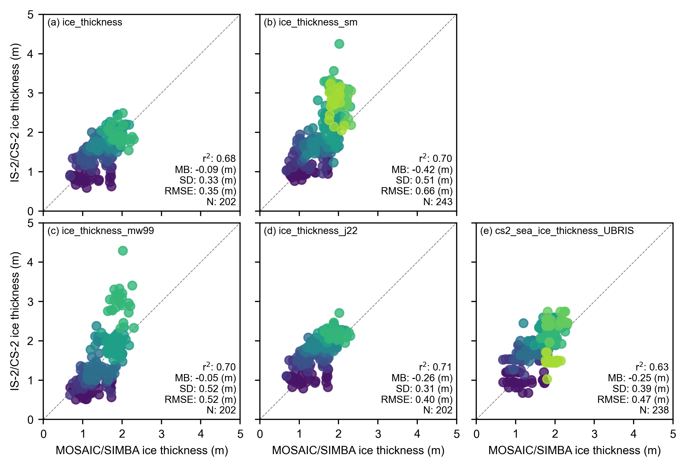
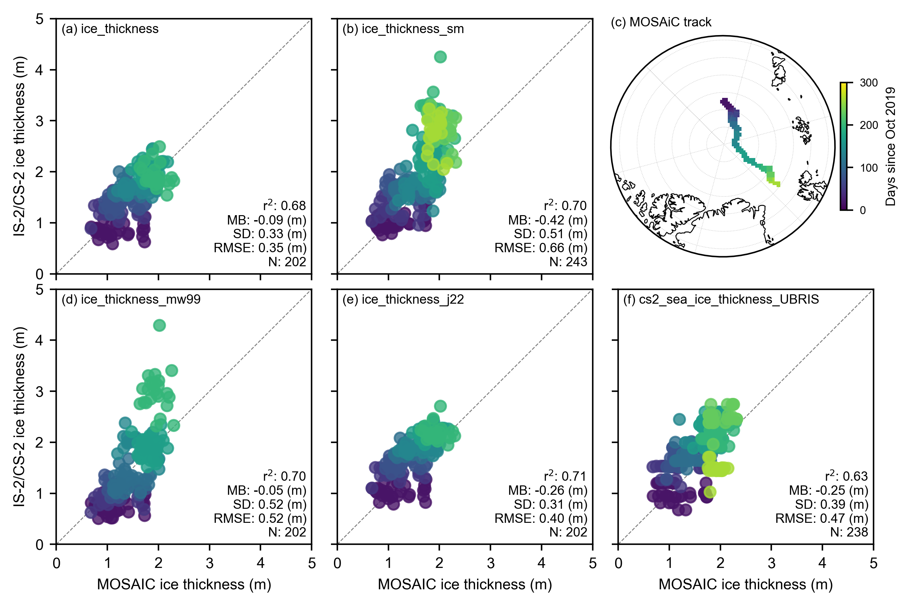
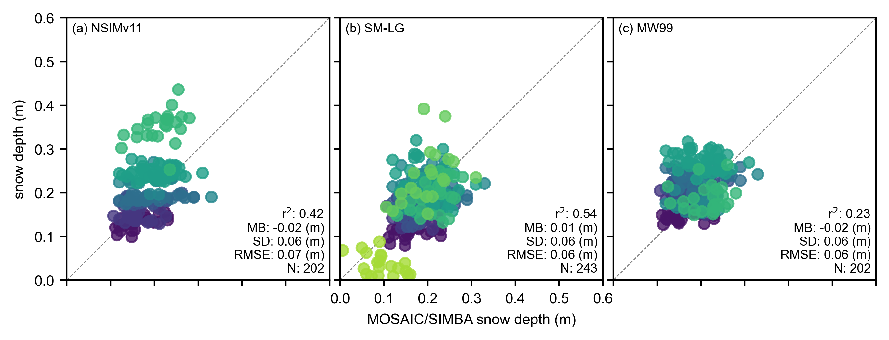

Comparisons with BGEP ULS sea ice draft estimates updated with new data#
Summary: In this notebook, we produce comparisons of the gridded ICESat-2 sea ice thickness data with draft measurements obtained from Upward Looking Sonar moorings deployed in the Beaufort Sea.
Version history: Version 1 (01/01/2022)
Import notebook dependencies#
import xarray as xr
import pandas as pd
import numpy as np
import itertools
import pyproj
from netCDF4 import Dataset
import scipy.interpolate
from utils.read_data_utils import read_book_data, read_IS2SITMOGR4 # Helper function for reading the data from the bucket
from utils.plotting_utils import compute_gridcell_winter_means, interactiveArcticMaps, interactive_winter_mean_maps, interactive_winter_comparison_lineplot # Plotting
from scipy import stats
import datetime
# Plotting dependencies
import cartopy.crs as ccrs
from textwrap import wrap
import hvplot.pandas
import holoviews as hv
import matplotlib.pyplot as plt
from matplotlib.axes import Axes
from cartopy.mpl.geoaxes import GeoAxes
GeoAxes._pcolormesh_patched = Axes.pcolormesh # Helps avoid some weird issues with the polar projection
%config InlineBackend.figure_format = 'retina'
import matplotlib as mpl
# Interpolating/smoothing packages
from scipy.interpolate import griddata
from scipy.spatial import KDTree
from astropy.convolution import convolve
from astropy.convolution import Gaussian2DKernel
mpl.rcParams['figure.dpi'] = 200 # Sets figure size in the notebook
# Remove warnings to improve display
import warnings
warnings.filterwarnings('ignore')
grid_size=25
ib_agg_str='mean'
extra='simba'
# Define the variables to compare
variables_ice = [
'ice_thickness',
'ice_thickness_sm',
'ice_thickness_mw99',
'ice_thickness_j22',
'cs2_sea_ice_thickness_UBRIS'
]
# Define the variables to compare
variables_snow = [
'snow_depth',
'snow_depth_sm',
'snow_depth_mw99',
]
variables_all = variables_ice+variables_snow
IS2SITMOGR4_v3 = read_IS2SITMOGR4(data_type='zarr-s3', persist=True)
IS2SITMOGR4_v3
load zarr from S3 bucket
zarr_path: s3://icesat-2-sea-ice-us-west-2/IS2SITMOGR4_V3/IS2SITMOGR4_V3_201811-202404.zarr
<xarray.Dataset>
Dimensions: (time: 46, y: 448, x: 304)
Coordinates:
latitude (y, x) float32 dask.array<chunksize=(224, 304), meta=np.ndarray>
longitude (y, x) float32 dask.array<chunksize=(224, 304), meta=np.ndarray>
* time (time) datetime64[ns] 2018-11-01 ... 2024...
* x (x) float32 -3.838e+06 ... 3.738e+06
* y (y) float32 5.838e+06 ... -5.338e+06
Data variables: (12/27)
crs (time) int32 dask.array<chunksize=(46,), meta=np.ndarray>
freeboard (time, y, x) float32 dask.array<chunksize=(1, 448, 304), meta=np.ndarray>
freeboard_int (time, y, x) float32 dask.array<chunksize=(1, 448, 304), meta=np.ndarray>
ice_density (time, y, x) float32 dask.array<chunksize=(1, 448, 304), meta=np.ndarray>
ice_density_j22 (time, y, x) float32 dask.array<chunksize=(1, 448, 304), meta=np.ndarray>
ice_thickness (time, y, x) float32 dask.array<chunksize=(1, 448, 304), meta=np.ndarray>
... ...
snow_density_sm (time, y, x) float32 dask.array<chunksize=(1, 448, 304), meta=np.ndarray>
snow_density_w99 (time, y, x) float32 dask.array<chunksize=(1, 448, 304), meta=np.ndarray>
snow_depth (time, y, x) float32 dask.array<chunksize=(1, 448, 304), meta=np.ndarray>
snow_depth_int (time, y, x) float32 dask.array<chunksize=(1, 448, 304), meta=np.ndarray>
snow_depth_mw99 (time, y, x) float32 dask.array<chunksize=(1, 448, 304), meta=np.ndarray>
snow_depth_sm (time, y, x) float32 dask.array<chunksize=(1, 448, 304), meta=np.ndarray>
Attributes:
contact: Alek Petty (akpetty@umd.edu)
description: Aggregated IS2SITMOGR4 V3 dataset.
history: Created 28/11/23
reference: Official NSIDC data doi: 10.5067/CV6JEXEE31HF. Derived data...
<xarray.Dataset>
Dimensions: (time: 46, y: 448, x: 304)
Coordinates:
latitude (y, x) float32 31.1 31.2 ... 34.58 34.47
longitude (y, x) float32 168.3 168.1 ... -10.18 -9.999
* time (time) datetime64[ns] 2018-11-01 ... 2024...
* x (x) float32 -3.838e+06 ... 3.738e+06
* y (y) float32 5.838e+06 ... -5.338e+06
Data variables: (12/27)
crs (time) int32 dask.array<chunksize=(46,), meta=np.ndarray>
freeboard (time, y, x) float32 dask.array<chunksize=(1, 448, 304), meta=np.ndarray>
freeboard_int (time, y, x) float32 dask.array<chunksize=(1, 448, 304), meta=np.ndarray>
ice_density (time, y, x) float32 dask.array<chunksize=(1, 448, 304), meta=np.ndarray>
ice_density_j22 (time, y, x) float32 dask.array<chunksize=(1, 448, 304), meta=np.ndarray>
ice_thickness (time, y, x) float32 dask.array<chunksize=(1, 448, 304), meta=np.ndarray>
... ...
snow_density_sm (time, y, x) float32 dask.array<chunksize=(1, 448, 304), meta=np.ndarray>
snow_density_w99 (time, y, x) float32 dask.array<chunksize=(1, 448, 304), meta=np.ndarray>
snow_depth (time, y, x) float32 dask.array<chunksize=(1, 448, 304), meta=np.ndarray>
snow_depth_int (time, y, x) float32 dask.array<chunksize=(1, 448, 304), meta=np.ndarray>
snow_depth_mw99 (time, y, x) float32 dask.array<chunksize=(1, 448, 304), meta=np.ndarray>
snow_depth_sm (time, y, x) float32 dask.array<chunksize=(1, 448, 304), meta=np.ndarray>
Attributes:
contact: Alek Petty (akpetty@umd.edu)
description: Aggregated IS2SITMOGR4 V3 dataset.
history: Created 28/11/23
reference: Official NSIDC data doi: 10.5067/CV6JEXEE31HF. Derived data...import glob
from datetime import datetime
def add_time_dim_v3(xda):
""" dummy function to just set current time as a new dimension to concat files over, change later! """
xda = xda.set_coords(["latitude","longitude", "y", "x"])
xda = xda.expand_dims(time = [datetime.now()])
return xda
def read_IS2SITMOGR4_SUMMER(version='V0', local_data_path="./data/IS2SITMOGR4_SUMMER/"):
""" Read in IS2SITMOGR4 summer monthly gridded thickness dataset from local netcdf files
"""
print(local_data_path+version+'/*.nc')
filenames = glob.glob(local_data_path+version+'/*.nc')
if len(filenames) == 0:
raise ValueError("No files, exit")
return None
dates = [pd.to_datetime(file.split("IS2SIT_SUMMER_01_")[1].split("_")[0], format = "%Y%m") for file in filenames]
# Add a dummy time then add the dates I want, seemed the easiest solution
is2_ds = xr.open_mfdataset(filenames, preprocess = add_time_dim_v3, engine='netcdf4')
is2_ds["time"] = dates
# Sort by time as glob file list wasn't!
is2_ds = is2_ds.sortby("time")
is2_ds = is2_ds.set_coords(["latitude","longitude","y","x"])
is2_ds = is2_ds.assign_coords(longitude=(["y","x"], is2_ds.longitude.values))
is2_ds = is2_ds.assign_coords(latitude=(["y","x"], is2_ds.latitude.values))
is2_ds = is2_ds.assign_attrs(description="Aggregated IS2SITMOGR4 summer "+version+" dataset.")
return is2_ds
IS2SITMOGR4_summer_v0 = read_IS2SITMOGR4_SUMMER()
IS2SITMOGR4_summer_v0
./data/IS2SITMOGR4_SUMMER/V0/*.nc
<xarray.Dataset>
Dimensions: (time: 11, y: 448, x: 304)
Coordinates:
* time (time) datetime64[ns] 2019-05-01 ... 2021...
longitude (y, x) float32 168.3 168.1 ... -10.18 -9.999
latitude (y, x) float32 31.1 31.2 ... 34.58 34.47
* x (x) float32 -3.838e+06 ... 3.738e+06
* y (y) float32 5.838e+06 ... -5.338e+06
Data variables: (12/26)
crs (time) int32 -2147483647 ... -2147483647
ice_thickness_sm (time, y, x) float32 dask.array<chunksize=(1, 448, 304), meta=np.ndarray>
ice_thickness_unc (time, y, x) float32 dask.array<chunksize=(1, 448, 304), meta=np.ndarray>
num_segments (time, y, x) float32 dask.array<chunksize=(1, 448, 304), meta=np.ndarray>
mean_day_of_month (time, y, x) float32 dask.array<chunksize=(1, 448, 304), meta=np.ndarray>
snow_depth_sm (time, y, x) float32 dask.array<chunksize=(1, 448, 304), meta=np.ndarray>
... ...
ice_thickness_unc_freeboard (time, y, x) float32 dask.array<chunksize=(1, 448, 304), meta=np.ndarray>
ice_thickness_unc_ice_density (time, y, x) float32 dask.array<chunksize=(1, 448, 304), meta=np.ndarray>
ice_thickness_unc_snow_density (time, y, x) float32 dask.array<chunksize=(1, 448, 304), meta=np.ndarray>
ice_thickness_unc_snow_depth (time, y, x) float32 dask.array<chunksize=(1, 448, 304), meta=np.ndarray>
sea_ice_conc (time, y, x) float32 dask.array<chunksize=(1, 448, 304), meta=np.ndarray>
region_mask (time, y, x) float32 dask.array<chunksize=(1, 448, 304), meta=np.ndarray>
Attributes:
contact: Alek Petty (akpetty@umd.edu)
description: Aggregated IS2SITMOGR4 summer V0 dataset.
history: Created 20/12/23IS2SITMOGR4_v3 = IS2SITMOGR4_summer_v0.merge(IS2SITMOGR4_v3)
IS2SITMOGR4_v3
<xarray.Dataset>
Dimensions: (time: 57, x: 304, y: 448)
Coordinates:
* time (time) datetime64[ns] 2018-11-01 ... 2024...
* x (x) float32 -3.838e+06 ... 3.738e+06
* y (y) float32 5.838e+06 ... -5.338e+06
longitude (y, x) float32 168.3 168.1 ... -10.18 -9.999
latitude (y, x) float32 31.1 31.2 ... 34.58 34.47
Data variables: (12/36)
crs (time) float64 dask.array<chunksize=(57,), meta=np.ndarray>
ice_thickness_sm (time, y, x) float32 dask.array<chunksize=(1, 448, 304), meta=np.ndarray>
ice_thickness_unc (time, y, x) float32 dask.array<chunksize=(1, 448, 304), meta=np.ndarray>
num_segments (time, y, x) float32 dask.array<chunksize=(1, 448, 304), meta=np.ndarray>
mean_day_of_month (time, y, x) float32 dask.array<chunksize=(1, 448, 304), meta=np.ndarray>
snow_depth_sm (time, y, x) float32 dask.array<chunksize=(1, 448, 304), meta=np.ndarray>
... ...
ice_type (time, y, x) float32 dask.array<chunksize=(1, 448, 304), meta=np.ndarray>
snow_density (time, y, x) float32 dask.array<chunksize=(1, 448, 304), meta=np.ndarray>
snow_density_w99 (time, y, x) float32 dask.array<chunksize=(1, 448, 304), meta=np.ndarray>
snow_depth (time, y, x) float32 dask.array<chunksize=(1, 448, 304), meta=np.ndarray>
snow_depth_int (time, y, x) float32 dask.array<chunksize=(1, 448, 304), meta=np.ndarray>
snow_depth_mw99 (time, y, x) float32 dask.array<chunksize=(1, 448, 304), meta=np.ndarray>
Attributes:
contact: Alek Petty (akpetty@umd.edu)
description: Aggregated IS2SITMOGR4 summer V0 dataset.
history: Created 20/12/23out_proj = 'EPSG:3411'
out_lons = IS2SITMOGR4_v3.longitude.values
out_lats = IS2SITMOGR4_v3.latitude.values
mapProj = pyproj.Proj("+init=" + out_proj)
xptsIS2, yptsIS2 = mapProj(out_lons, out_lats)
def getCS2ubris(mapProj, dataPathCS2, dataset):
""" Read in the University of Bristol CryoSat-2 sea ice thickness data
Args:
dataPathCS2 (str): location of data
Returns
xptsT (2d numpy array): x coordinates on our map projection
yptsT (2d numpy array): y coordinates on our map projection
thicknessCS (2d numpy array): monthly sea ice thickness estimates
"""
ubris_f = xr.open_dataset(dataPathCS2+dataset, decode_times=False)
# Issue with time starting from year 0!
# Re-set it to start from some other year
ubris_f = ubris_f.rename({'Time':'time'})
ubris_f['time'] = ubris_f['time']-679352
ubris_f.time.attrs["units"] = "days since 1860-01-01"
decoded_time = xr.decode_cf(ubris_f)
ubris_f['time']=decoded_time.time
ubris_f = ubris_f.swap_dims({'t': 'time'})
# Resample to monthly, note that the S just makes the index start on the 1st of the month
thicknessCS = ubris_f.resample(time="MS").mean()
xptsT, yptsT = mapProj(thicknessCS.isel(time=0).Longitude, thicknessCS.isel(time=0).Latitude)
return xptsT, yptsT, thicknessCS
def regridToICESat2(dataArrayNEW, xptsNEW, yptsNEW, xptsIS2, yptsIS2):
""" Regrid new data to ICESat-2 grid
Args:
dataArrayNEW (xarray DataArray): Numpy variable array to be gridded to ICESat-2 grid
xptsNEW (numpy array): x-values of dataArrayNEW projected to ICESat-2 map projection
yptsNEW (numpy array): y-values of dataArrayNEW projected to ICESat-2 map projection
xptsIS2 (numpy array): ICESat-2 longitude projected to ICESat-2 map projection
yptsIS2 (numpy array): ICESat-2 latitude projected to ICESat-2 map projection
Returns:
gridded (numpy array): data regridded to ICESat-2 map projection
"""
#gridded = []
#for i in range(len(dataArrayNEW.values)):
gridded = scipy.interpolate.griddata((xptsNEW.flatten(),yptsNEW.flatten()), dataArrayNEW.flatten(), (xptsIS2, yptsIS2), method = 'nearest')
try:
gridded = scipy.interpolate.griddata((xptsNEW.flatten(),yptsNEW.flatten()), dataArrayNEW.flatten(), (xptsIS2, yptsIS2), method = 'nearest')
except:
try:
gridded = scipy.interpolate.griddata((xptsNEW,yptsNEW), dataArrayNEW, (xptsIS2, yptsIS2), method = 'nearest')
except:
print('Error interpolating..')
return gridded
def regrid_ubris_is2(mapProj, xptsIS2, yptsIS2, out_lons, out_lats, date_range, dataPathCS2='/home/jovyan/Data/CS2/UIT/', dataset='ubristol_cryosat2_seaicethickness_nh_80km_v1p7.nc'):
cs2_ubris = []
valid_dates=[]
xptsT_ubris, yptsT_ubris, cs2_ubris_raw = getCS2ubris(mapProj, dataPathCS2, dataset)
for date in date_range:
try:
cs2_ubris_temp_is2grid = regridToICESat2(cs2_ubris_raw.Sea_Ice_Thickness.sel(time=date).values, xptsT_ubris, yptsT_ubris, xptsIS2, yptsIS2)
ice_conc_is2grid = regridToICESat2(cs2_ubris_raw.Sea_Ice_Concentration.sel(time=date).values, xptsT_ubris, yptsT_ubris, xptsIS2, yptsIS2)
#cs2_ubris_temp_is2grid[ice_conc_is2grid<0.5]=np.nan
cs2_ice_type_is2grid = regridToICESat2(cs2_ubris_raw.Sea_Ice_Type.sel(time=date).values, xptsT_ubris, yptsT_ubris, xptsIS2, yptsIS2)
except:
print(date)
print('no CS-2 data or issue with gridding, so skipping...')
continue
valid_dates.append(date)
#cs2_ubris_temp_is2grid_xr = xr.DataArray(data = cs2_ubris_temp_is2grid,
# dims = ['y', 'x'],
# coords = {'latitude': (('y','x'), out_lats), 'longitude': (('y','x'), out_lons), 'x': (('x'), IS2SITMOGR4_v3.x.values), 'y': (('y'), IS2SITMOGR4_v3.y.values)},
# name = 'cs2_sea_ice_thickness_UBRIS')
cs2_ubris_temp_is2grid_xr = xr.Dataset({'cs2_sea_ice_thickness_UBRIS': (('y', 'x'), cs2_ubris_temp_is2grid),
'cs2_sea_ice_type_UBRIS': (('y', 'x'), cs2_ice_type_is2grid)},
coords = {'latitude': (('y','x'), out_lats), 'longitude': (('y','x'), out_lons), 'x': (('x'), IS2SITMOGR4_v3.x.values), 'y': (('y'), IS2SITMOGR4_v3.y.values)}
)
cs2_ubris.append(cs2_ubris_temp_is2grid_xr)
cs2_ubris = xr.concat(cs2_ubris, 'time')
#cs2_ubris = cs2_ubris.assign_coords(time=valid_dates)
cs2_ubris_attrs = {'units': 'meters', 'long_name': 'University of Bristol CryoSat-2 Arctic sea ice thickness', 'data_download': 'https://data.bas.ac.uk/full-record.php?id=GB/NERC/BAS/PDC/01613',
'download_date': '09-2022', 'citation': 'Landy, J.C., Dawson, G.J., Tsamados, M. et al. A year-round satellite sea-ice thickness record from CryoSat-2. Nature 609, 517–522 (2022). https://doi.org/10.1038/s41586-022-05058-5'}
cs2_ubris = cs2_ubris.assign_coords(time=valid_dates)
cs2_ubris = cs2_ubris.assign_attrs(cs2_ubris_attrs)
return cs2_ubris
start_date_cs2 = "Nov 2018"
end_date_cs2 = "July 2021"
# MS indicates a time frequency of start of the month
date_range_cs2 = pd.date_range(start=start_date_cs2, end=end_date_cs2, freq='MS')
cs2_ubris = regrid_ubris_is2(mapProj, xptsIS2, yptsIS2, out_lons, out_lats, date_range_cs2,
dataPathCS2='/Users/akpetty/Data/CS2/', dataset='uit_cryosat2_seaicethickness_nh_80km_v1p7.nc')
IS2SITMOGR4_v3 = IS2SITMOGR4_v3.merge(cs2_ubris)
IS2SITMOGR4_v3 = IS2SITMOGR4_v3.sel(time=slice('2019-10-01', '2020-06-30'))
IS2SITMOGR4_v3_int = IS2SITMOGR4_v3.copy(deep=True)
# ... existing code ...
# Interpolation settings
method = "linear"
# Create a new dataset to store the interpolated values
#IS2SITMOGR4_v3_int = xr.Dataset()
# Loop over each time step
for time_index in range(IS2SITMOGR4_v3.dims['time']):
print(time_index)# Loop over each variable
for var in variables_all:
print(var)# Perform linear interpolation for the current time step
try:
is2_to_interp = IS2SITMOGR4_v3[var].isel(time=time_index).values.copy()
is2_to_interp[np.where(IS2SITMOGR4_v3.sea_ice_conc.isel(time=time_index) < 0.15)] = 0 # Set 15% conc or less to 0 thickness
np_interpolated = griddata((xptsIS2[(np.isfinite(is2_to_interp))],
yptsIS2[(np.isfinite(is2_to_interp))]),
is2_to_interp[(np.isfinite(is2_to_interp))].flatten(),
(xptsIS2, yptsIS2),
fill_value=np.nan,
method=method)
np_interpolated[~(np.isfinite(IS2SITMOGR4_v3.sea_ice_conc.isel(time=time_index)))] = np.nan # Remove thickness data where cdr data is nan
np_interpolated[np.where(IS2SITMOGR4_v3.sea_ice_conc.isel(time=time_index) < 0.5)] = np.nan # Remove thickness data where cdr data < 50% concentration
x_stddev = 0.5
kernel = Gaussian2DKernel(x_stddev=x_stddev)
np_interpolated_gauss = convolve(np_interpolated, kernel)
np_interpolated_gauss[~(np.isfinite(IS2SITMOGR4_v3.sea_ice_conc.isel(time=time_index)))] = np.nan # Remove thickness data where cdr data is nan
np_interpolated_gauss[np.where(IS2SITMOGR4_v3.sea_ice_conc.isel(time=time_index) < 0.5)] = np.nan # Remove thickness data where cdr data < 50% concentration
print(np_interpolated_gauss.shape)
# Ensure the data is in the correct shape
#np_interpolated_gauss = np_interpolated_gauss[np.newaxis, :, :] # Add a new axis for time
# Add the interpolated data to the new dataset
IS2SITMOGR4_v3[var].isel(time=time_index)[:] = np_interpolated_gauss
except:
print(var)
print(time_index)
print('no data or issue with gridding, so skipping...')
#IS2SITMOGR4_v3[var].isel(time=time_index)[:] = np.full(np_interpolated_gauss.shape, np.nan)
continue
#else:
# IS2SITMOGR4_v3_int[var] = xr.concat([IS2SITMOGR4_v3_int[var], xr.DataArray(np_interpolated_gauss, dims=('time', 'y', 'x'))], dim='time')
# Add latitude, longitude, and time coordinates to the new dataset
#IS2SITMOGR4_v3_int = IS2SITMOGR4_v3_int.assign_coords({
# 'latitude': (('y', 'x'), IS2SITMOGR4_v3.latitude.values),
# 'longitude': (('y', 'x'), IS2SITMOGR4_v3.longitude.values),
# 'time': IS2SITMOGR4_v3.time.values
#})
# ... existing code ...
0
ice_thickness
(448, 304)
ice_thickness_sm
(448, 304)
ice_thickness_mw99
(448, 304)
ice_thickness_j22
(448, 304)
cs2_sea_ice_thickness_UBRIS
(448, 304)
snow_depth
(448, 304)
snow_depth_sm
(448, 304)
snow_depth_mw99
(448, 304)
1
ice_thickness
(448, 304)
ice_thickness_sm
(448, 304)
ice_thickness_mw99
(448, 304)
ice_thickness_j22
(448, 304)
cs2_sea_ice_thickness_UBRIS
(448, 304)
snow_depth
(448, 304)
snow_depth_sm
(448, 304)
snow_depth_mw99
(448, 304)
2
ice_thickness
(448, 304)
ice_thickness_sm
(448, 304)
ice_thickness_mw99
ice_thickness_mw99
2
no data or issue with gridding, so skipping...
ice_thickness_j22
(448, 304)
cs2_sea_ice_thickness_UBRIS
(448, 304)
snow_depth
(448, 304)
snow_depth_sm
(448, 304)
snow_depth_mw99
(448, 304)
3
ice_thickness
(448, 304)
ice_thickness_sm
(448, 304)
ice_thickness_mw99
(448, 304)
ice_thickness_j22
(448, 304)
cs2_sea_ice_thickness_UBRIS
(448, 304)
snow_depth
(448, 304)
snow_depth_sm
(448, 304)
snow_depth_mw99
(448, 304)
4
ice_thickness
(448, 304)
ice_thickness_sm
(448, 304)
ice_thickness_mw99
IS2SITMOGR4_v3_int
<xarray.Dataset>
Dimensions: (time: 9, x: 304, y: 448)
Coordinates:
* time (time) datetime64[ns] 2019-10-01 ... 2020...
* x (x) float32 -3.838e+06 ... 3.738e+06
* y (y) float32 5.838e+06 ... -5.338e+06
longitude (y, x) float32 168.3 168.1 ... -10.18 -9.999
latitude (y, x) float32 31.1 31.2 ... 34.58 34.47
Data variables: (12/38)
crs (time) float64 dask.array<chunksize=(9,), meta=np.ndarray>
ice_thickness_sm (time, y, x) float32 dask.array<chunksize=(1, 448, 304), meta=np.ndarray>
ice_thickness_unc (time, y, x) float32 dask.array<chunksize=(1, 448, 304), meta=np.ndarray>
num_segments (time, y, x) float32 dask.array<chunksize=(1, 448, 304), meta=np.ndarray>
mean_day_of_month (time, y, x) float32 dask.array<chunksize=(1, 448, 304), meta=np.ndarray>
snow_depth_sm (time, y, x) float32 dask.array<chunksize=(1, 448, 304), meta=np.ndarray>
... ...
snow_density_w99 (time, y, x) float32 dask.array<chunksize=(1, 448, 304), meta=np.ndarray>
snow_depth (time, y, x) float32 dask.array<chunksize=(1, 448, 304), meta=np.ndarray>
snow_depth_int (time, y, x) float32 dask.array<chunksize=(1, 448, 304), meta=np.ndarray>
snow_depth_mw99 (time, y, x) float32 dask.array<chunksize=(1, 448, 304), meta=np.ndarray>
cs2_sea_ice_thickness_UBRIS (time, y, x) float64 0.0 0.0 0.0 ... 0.0 0.0
cs2_sea_ice_type_UBRIS (time, y, x) float64 nan nan nan ... nan nan
Attributes:
contact: Alek Petty (akpetty@umd.edu)
description: Aggregated IS2SITMOGR4 summer V0 dataset.
history: Created 20/12/23IS2SITMOGR4_v3 = IS2SITMOGR4_v3_int
IS2SITMOGR4_v3
<xarray.Dataset>
Dimensions: (time: 9, x: 304, y: 448)
Coordinates:
* time (time) datetime64[ns] 2019-10-01 ... 2020...
* x (x) float32 -3.838e+06 ... 3.738e+06
* y (y) float32 5.838e+06 ... -5.338e+06
longitude (y, x) float32 168.3 168.1 ... -10.18 -9.999
latitude (y, x) float32 31.1 31.2 ... 34.58 34.47
Data variables: (12/38)
crs (time) float64 dask.array<chunksize=(9,), meta=np.ndarray>
ice_thickness_sm (time, y, x) float32 dask.array<chunksize=(1, 448, 304), meta=np.ndarray>
ice_thickness_unc (time, y, x) float32 dask.array<chunksize=(1, 448, 304), meta=np.ndarray>
num_segments (time, y, x) float32 dask.array<chunksize=(1, 448, 304), meta=np.ndarray>
mean_day_of_month (time, y, x) float32 dask.array<chunksize=(1, 448, 304), meta=np.ndarray>
snow_depth_sm (time, y, x) float32 dask.array<chunksize=(1, 448, 304), meta=np.ndarray>
... ...
snow_density_w99 (time, y, x) float32 dask.array<chunksize=(1, 448, 304), meta=np.ndarray>
snow_depth (time, y, x) float32 dask.array<chunksize=(1, 448, 304), meta=np.ndarray>
snow_depth_int (time, y, x) float32 dask.array<chunksize=(1, 448, 304), meta=np.ndarray>
snow_depth_mw99 (time, y, x) float32 dask.array<chunksize=(1, 448, 304), meta=np.ndarray>
cs2_sea_ice_thickness_UBRIS (time, y, x) float64 0.0 0.0 0.0 ... 0.0 0.0
cs2_sea_ice_type_UBRIS (time, y, x) float64 nan nan nan ... nan nan
Attributes:
contact: Alek Petty (akpetty@umd.edu)
description: Aggregated IS2SITMOGR4 summer V0 dataset.
history: Created 20/12/23# COARSEN TO MATCH 100 KM RESOLUTION OF IB
if grid_size==100:
IS2SITMOGR4_v3 = IS2SITMOGR4_v3.coarsen(y=4, x=4, boundary='trim').mean()
IS2SITMOGR4_v3
# Open the NetCDF file
# Replace 'path/to/your/file.nc' with the actual path to your NetCDF filemagnaprobe_data_IS2_collocated_all_ice_25km
#file_path = '/Users/akpetty/Data/IS2-obs-comparison-data/magnaprobe_on_is2_grid_'+str(grid_size)+'km_snow_depth_sit_PRELIMINARY.nc'
file_path = '/Users/akpetty/Data/IS2-obs-comparison-data/simba_snow_ice_mosaic_on_is2_grid_'+str(grid_size)+'km.nc'
dataset = xr.open_dataset(file_path)
dataset = dataset.rename({'date': 'time'})
dataset = dataset.transpose('y', 'x', 'time')
# Display the dataset
print(dataset)
<xarray.Dataset>
Dimensions: (x: 304, y: 448, time: 269)
Coordinates:
lon (y, x) float32 ...
lat (y, x) float32 ...
* x (x) float32 -3.838e+06 -3.812e+06 ... 3.738e+06
* y (y) float32 5.838e+06 5.812e+06 ... -5.338e+06
* time (time) datetime64[ns] 2019-10-05 ... 2020-06-29
crs int32 ...
Data variables:
sea_ice_thickness_mean (y, x, time) float32 ...
sea_ice_thickness_median (y, x, time) float32 ...
snow_thickness_mean (y, x, time) float32 ...
snow_thickness_median (y, x, time) float32 ...
dataset_months = dataset.resample(time='MS').mean()
dataset_months
<xarray.Dataset>
Dimensions: (y: 448, x: 304, time: 9)
Coordinates:
lon (y, x) float32 ...
lat (y, x) float32 ...
* x (x) float32 -3.838e+06 -3.812e+06 ... 3.738e+06
* y (y) float32 5.838e+06 5.812e+06 ... -5.338e+06
crs int32 0
* time (time) datetime64[ns] 2019-10-01 ... 2020-06-01
Data variables:
sea_ice_thickness_mean (time, y, x) float32 nan nan nan ... nan nan nan
sea_ice_thickness_median (time, y, x) float32 nan nan nan ... nan nan nan
snow_thickness_mean (time, y, x) float32 nan nan nan ... nan nan nan
snow_thickness_median (time, y, x) float32 nan nan nan ... nan nan nanIS2SITMOGR4_v3
<xarray.Dataset>
Dimensions: (time: 9, x: 304, y: 448)
Coordinates:
* time (time) datetime64[ns] 2019-10-01 ... 2020...
* x (x) float32 -3.838e+06 ... 3.738e+06
* y (y) float32 5.838e+06 ... -5.338e+06
longitude (y, x) float32 168.3 168.1 ... -10.18 -9.999
latitude (y, x) float32 31.1 31.2 ... 34.58 34.47
Data variables: (12/38)
crs (time) float64 dask.array<chunksize=(9,), meta=np.ndarray>
ice_thickness_sm (time, y, x) float32 dask.array<chunksize=(1, 448, 304), meta=np.ndarray>
ice_thickness_unc (time, y, x) float32 dask.array<chunksize=(1, 448, 304), meta=np.ndarray>
num_segments (time, y, x) float32 dask.array<chunksize=(1, 448, 304), meta=np.ndarray>
mean_day_of_month (time, y, x) float32 dask.array<chunksize=(1, 448, 304), meta=np.ndarray>
snow_depth_sm (time, y, x) float32 dask.array<chunksize=(1, 448, 304), meta=np.ndarray>
... ...
snow_density_w99 (time, y, x) float32 dask.array<chunksize=(1, 448, 304), meta=np.ndarray>
snow_depth (time, y, x) float32 dask.array<chunksize=(1, 448, 304), meta=np.ndarray>
snow_depth_int (time, y, x) float32 dask.array<chunksize=(1, 448, 304), meta=np.ndarray>
snow_depth_mw99 (time, y, x) float32 dask.array<chunksize=(1, 448, 304), meta=np.ndarray>
cs2_sea_ice_thickness_UBRIS (time, y, x) float64 0.0 0.0 0.0 ... 0.0 0.0
cs2_sea_ice_type_UBRIS (time, y, x) float64 nan nan nan ... nan nan
Attributes:
contact: Alek Petty (akpetty@umd.edu)
description: Aggregated IS2SITMOGR4 summer V0 dataset.
history: Created 20/12/23dataset_months.snow_thickness_mean.time
<xarray.DataArray 'time' (time: 9)>
array(['2019-10-01T00:00:00.000000000', '2019-11-01T00:00:00.000000000',
'2019-12-01T00:00:00.000000000', '2020-01-01T00:00:00.000000000',
'2020-02-01T00:00:00.000000000', '2020-03-01T00:00:00.000000000',
'2020-04-01T00:00:00.000000000', '2020-05-01T00:00:00.000000000',
'2020-06-01T00:00:00.000000000'], dtype='datetime64[ns]')
Coordinates:
crs int32 0
* time (time) datetime64[ns] 2019-10-01 2019-11-01 ... 2020-06-01fig_width=6.8
fig_height=5.4
im1 = dataset_months.sea_ice_thickness_mean.plot(x="lon", y="lat", col='time', transform=ccrs.PlateCarree(),
cmap="viridis", zorder=3, add_labels=False, col_wrap=4,
subplot_kws={'projection':ccrs.NorthPolarStereo(central_longitude=-45)},
cbar_kwargs={'pad':0.01,'shrink': 0.3,'extend':'both',
'label':'Sea ice thickness (m)', 'location':'bottom'},
vmin=0, vmax=5,
figsize=(fig_width, fig_height))
# Add map features to all subplots
i=0
for i, ax in enumerate(im1.axes.flatten()):
ax.coastlines(linewidth=0.15, color='black', zorder=2)
#ax.add_feature(cfeature.LAND, color='0.95', zorder=1)
ax.gridlines(draw_labels=False, linewidth=0.25, color='gray', alpha=0.7, linestyle='--', zorder=3)
ax.set_extent([-179, 179, 78, 90], crs=ccrs.PlateCarree())
#ax.text(0.02, 0.93, panel_letters[i], transform=ax.transAxes, fontsize=7, va='bottom', ha='left')
#ax.set_title('', fontsize=8)
i+=1
#plt.subplots_adjust(wspace=0.01)
#plt.savefig('./figs/maps_summer_thickness_comparison.png', dpi=300, facecolor="white")
plt.show()
plt.close()
{kind=link}
np.where(dataset_months.sea_ice_thickness_mean>3)
(array([], dtype=int64), array([], dtype=int64), array([], dtype=int64))
times = dataset_months.time.values
# Define a reference date (adjust as needed)
reference_date = np.datetime64('2019-09-15')
# Convert times to days since reference date
days_since_reference = (times - reference_date).astype('timedelta64[D]').astype(int)
shape = (len(times), dataset_months.sea_ice_thickness_mean.y.shape[0], dataset_months.sea_ice_thickness_mean.x.shape[0])
month_time = np.empty(shape)
month_time.fill(np.nan)
for i in range(len(times)):
valid_cells = ~np.isnan(dataset_months['sea_ice_thickness_mean']).isel(time=i).values
month_time[i][valid_cells] = days_since_reference[i]
mean_time = np.nanmean(month_time, axis=0)
times
array(['2019-10-01T00:00:00.000000000', '2019-11-01T00:00:00.000000000',
'2019-12-01T00:00:00.000000000', '2020-01-01T00:00:00.000000000',
'2020-02-01T00:00:00.000000000', '2020-03-01T00:00:00.000000000',
'2020-04-01T00:00:00.000000000', '2020-05-01T00:00:00.000000000',
'2020-06-01T00:00:00.000000000'], dtype='datetime64[ns]')
reference_date = np.datetime64('2019-09-15') # Example reference date
# Initialize a dictionary to store validation results
validation_results = {}
# Calculate statistics and generate scatter plots for each variable
for var in variables_ice:
# Calculate statistics
IS2_var = IS2SITMOGR4_v3[var]
IB_var = dataset_months['sea_ice_thickness_mean']
IB_time = dataset_months['time']
# Initialize lists to store the stacked points
IB_comps_list = []
IS2_comps_list = []
IB_time_list = []
# Loop through the time dimension
for t in range(IS2_var.sizes['time']):
print('IS2 time', t)
IS2_var_time = IS2_var.isel(time=t)
IB_var_time = IB_var.isel(time=t)
#print('IB time', IB_var_time)
valid_mask = ~np.isnan(IS2_var_time.values) & ~np.isnan(IB_var_time.values)
IB_comps_list.append(IB_var_time.where(valid_mask).values.flatten()[~np.isnan(IB_var_time.where(valid_mask).values.flatten())])
IS2_comps_list.append(IS2_var_time.where(valid_mask).values.flatten()[~np.isnan(IS2_var_time.where(valid_mask).values.flatten())])
days_since_array = (IB_time.isel(time=t).values - reference_date).astype('timedelta64[D]').astype(int)
print(days_since_array)
IB_time_list.append([days_since_array]*len(IB_var_time.where(valid_mask).values.flatten()[~np.isnan(IB_var_time.where(valid_mask).values.flatten())]))
# Stack the points together
IB_comps = np.concatenate(IB_comps_list)
IS2_comps = np.concatenate(IS2_comps_list)
IB_time = np.concatenate(IB_time_list)
# Correlation Coeff
correlation = '%.02f' % (np.corrcoef(IS2_comps, IB_comps)[0, 1])
# Calculate mean bias
mean_bias = '%.02f' % (np.mean(IS2_comps - IB_comps))
# Calculate standard dev of differences
std_dev = '%.02f' % (np.std(IB_comps - IS2_comps))
# Calculate RMSE
rmse = '%.02f' % (np.sqrt(np.mean((IS2_comps - IB_comps) ** 2)))
# Store results
validation_results[var] = {
'r_str': correlation, 'mb_str': mean_bias, 'sd_str': std_dev, 'rmse': rmse,
'IB_comps': IB_comps, 'IS2_comps': IS2_comps,'IB_time': IB_time
}
# Print validation results
print(validation_results)
IS2 time 0
16
IS2 time 1
47
IS2 time 2
77
IS2 time 3
108
IS2 time 4
139
IS2 time 5
168
IS2 time 6
199
IS2 time 7
229
IS2 time 8
260
IS2 time 0
16
IS2 time 1
47
IS2 time 2
77
IS2 time 3
108
IS2 time 4
139
IS2 time 5
168
IS2 time 6
199
IS2 time 7
229
IS2 time 8
260
IS2 time 0
16
IS2 time 1
47
IS2 time 2
77
IS2 time 3
108
IS2 time 4
139
IS2 time 5
168
IS2 time 6
199
IS2 time 7
229
IS2 time 8
260
IS2 time 0
16
IS2 time 1
47
IS2 time 2
77
IS2 time 3
108
IS2 time 4
139
IS2 time 5
168
IS2 time 6
199
IS2 time 7
229
IS2 time 8
260
IS2 time 0
16
IS2 time 1
47
IS2 time 2
77
IS2 time 3
108
IS2 time 4
139
IS2 time 5
168
IS2 time 6
199
IS2 time 7
229
IS2 time 8
260
{'ice_thickness': {'r_str': '0.68', 'mb_str': '-0.09', 'sd_str': '0.33', 'rmse': '0.35', 'IB_comps': array([1.18 , 1.3225 , 1.7380002 , 0.82571423, 1.0745454 ,
1.1845454 , 1.1164286 , 1. , 0.7888888 , 0.9624242 ,
1.4155556 , 1.73 , 0.98 , 0.685 , 1.2444445 ,
1.4025 , 1.71 , 0.9266667 , 0.75714284, 1.085 ,
0.85666674, 1.69 , 0.9575 , 0.78285724, 1.1019047 ,
1.69 , 0.885 , 1.06375 , 0.79 , 1.72 ,
1.13 , 1.2246668 , 1.6116667 , 0.8433333 , 0.93009526,
0.83636504, 1.1697646 , 1.5957143 , 0.96666664, 0.8794285 ,
1.0232564 , 1.11 , 1.1391667 , 1.06 , 1.0262499 ,
0.91303027, 1.0115556 , 1.286857 , 0.68 , 0.74666667,
1.5975001 , 1.26 , 1.72 , 0.94666666, 1.0184 ,
1.1741667 , 1.2002 , 1.1643652 , 1.4375 , 1.1 ,
0.9507619 , 1.24 , 1.01 , 1.0666666 , 1.72 ,
1.076 , 1.0213333 , 1.2182353 , 1.6311114 , 1.75 ,
1.26 , 1.1792858 , 1.0983999 , 1.0667471 , 1.59375 ,
1.26 , 1.1885713 , 1.5282223 , 1.4833335 , 1.34 ,
1.12 , 1.1406666 , 1.78 , 1.36 , 1.1666666 ,
1.3319259 , 1.599 , 1.4 , 1.2285713 , 1.1708788 ,
1.6520001 , 1.81 , 1.3039999 , 1.5129629 , 1.1618667 ,
1.83 , 1.44 , 1.232 , 1.3337407 , 1.3565418 ,
1.715 , 1.4166666 , 1.349762 , 1.2582406 , 1.3424168 ,
1.8474998 , 1.48 , 1.4076921 , 1.5992857 , 1.12 ,
1.32 , 1.4 , 1.405 , 1.3909167 , 1.395 ,
1.87625 , 1.52 , 1.3168334 , 1.7215 , 1.2 ,
1.5525 , 1.4341667 , 1.7858334 , 1.5366666 , 1.7383333 ,
1.95 , 1.349762 , 1.6855556 , 1.9619999 , 1.9735715 ,
2. , 2.01 , 1.89 , 2.01 , 1.7133332 ,
1.4742593 , 1.677 , 2.0149999 , 1.8033333 , 1.91 ,
1.7826667 , 1.9383334 , 1.8866667 , 1.6666666 , 1.625 ,
2.05 , 1.6466666 , 1.665 , 1.8316667 , 1.7550001 ,
1.6700001 , 1.7988888 , 2.05 , 1.71 , 1.5952001 ,
1.7447222 , 1.6911111 , 1.6833334 , 1.88 , 1.84 ,
1.7800001 , 1.8714286 , 1.5983332 , 1.6511428 , 1.9864284 ,
2.18 , 1.98 , 1.9875002 , 1.8218333 , 1.8824999 ,
1.7 , 1.9200001 , 1.6475 , 1.8235 , 2.095 ,
1.95 , 1.955 , 1.97 , 1.72 , 1.6393332 ,
2.035 , 1.92 , 1.69 , 1.7576667 , 1.8504667 ,
2.006875 , 1.9333334 , 2.1675 , 1.88 , 1.7971112 ,
1.8022922 , 1.845893 , 1.9975047 , 1.9637038 , 2.21 ,
2. , 1.9392859 , 2.0210526 , 1.9610001 , 2.1683333 ,
2.3 , 2.26 ], dtype=float32), 'IS2_comps': array([0.985, 0.989, 1.117, 0.668, 0.753, 0.786, 1.268, 0.713, 0.895,
0.78 , 0.794, 0.625, 0.857, 0.918, 0.85 , 0.763, 0.98 , 1.076,
0.856, 0.978, 0.872, 0.731, 0.817, 0.808, 0.588, 0.851, 0.764,
0.741, 0.891, 0.878, 1.218, 1.021, 1.228, 1.168, 1.287, 1.363,
1.377, 1.209, 1.162, 1.295, 1.434, 1.636, 1.175, 1.343, 1.167,
1.257, 1.342, 1.201, 0.888, 1.337, 1.154, 1.111, 1.094, 1.285,
1.481, 1.4 , 1.349, 1.413, 1.457, 1.432, 1.421, 1.444, 1.311,
1.452, 1.335, 1.408, 1.552, 1.198, 1.263, 1.368, 1.361, 1.259,
1.296, 1.162, 1.494, 1.363, 1.342, 1.317, 1.414, 1.637, 1.607,
1.548, 1.795, 1.825, 1.639, 1.535, 1.703, 1.694, 1.647, 1.521,
1.508, 1.571, 1.87 , 1.712, 1.592, 1.692, 1.776, 2.002, 1.683,
1.677, 1.667, 1.988, 1.718, 1.729, 1.668, 1.678, 1.58 , 1.672,
1.709, 1.557, 1.597, 1.637, 1.605, 1.646, 1.536, 1.499, 1.657,
1.725, 1.663, 1.627, 1.755, 1.678, 1.645, 1.751, 1.696, 1.643,
1.774, 1.583, 1.616, 1.72 , 1.79 , 1.844, 2.453, 2.12 , 1.769,
2.049, 1.842, 1.96 , 1.969, 2.021, 2.048, 1.921, 2.01 , 1.99 ,
1.914, 2.199, 2.144, 1.954, 2.16 , 2.23 , 2.07 , 2.132, 2.148,
2.132, 2.073, 2.046, 2.27 , 2.182, 2.439, 2.094, 1.949, 2.053,
2.197, 2.017, 2.155, 2.193, 2.127, 2.149, 2.172, 2.134, 2.045,
1.962, 2.104, 2.155, 2.204, 1.976, 1.857, 2.136, 2.209, 2.081,
2.185, 2.036, 2.018, 1.819, 1.806, 1.906, 1.887, 1.541, 2.349,
1.841, 1.925, 1.818, 1.779, 1.67 , 1.756, 1.797, 1.747, 2.492,
1.853, 1.821, 1.821, 1.886], dtype=float32), 'IB_time': array([ 16., 16., 16., 16., 16., 16., 16., 16., 16., 16., 16.,
16., 16., 16., 16., 16., 16., 16., 16., 16., 16., 16.,
16., 16., 16., 16., 16., 16., 16., 16., 47., 47., 47.,
47., 47., 47., 47., 47., 47., 47., 47., 47., 47., 47.,
47., 47., 47., 47., 47., 47., 47., 47., 47., 77., 77.,
77., 77., 77., 77., 77., 77., 77., 77., 77., 77., 77.,
77., 77., 77., 77., 77., 77., 77., 77., 77., 77., 77.,
77., 77., 108., 108., 108., 108., 108., 108., 108., 108., 108.,
108., 108., 108., 108., 108., 108., 108., 108., 108., 108., 108.,
108., 108., 108., 108., 108., 108., 108., 108., 108., 108., 108.,
139., 139., 139., 139., 139., 139., 139., 139., 139., 139., 139.,
139., 139., 139., 139., 139., 139., 139., 139., 139., 139., 139.,
139., 139., 168., 168., 168., 168., 168., 168., 168., 168., 168.,
168., 168., 168., 168., 168., 168., 168., 168., 168., 168., 168.,
168., 168., 168., 168., 168., 168., 168., 168., 168., 168., 168.,
168., 168., 168., 168., 168., 168., 168., 168., 168., 168., 168.,
168., 168., 199., 199., 199., 199., 199., 199., 199., 199., 199.,
199., 199., 199., 199., 199., 199., 199., 199., 199., 199., 199.,
199., 199., 199., 199.])}, 'ice_thickness_sm': {'r_str': '0.70', 'mb_str': '-0.42', 'sd_str': '0.51', 'rmse': '0.66', 'IB_comps': array([1.18 , 1.3225 , 1.7380002 , 0.82571423, 1.0745454 ,
1.1845454 , 1.1164286 , 1. , 0.7888888 , 0.9624242 ,
1.4155556 , 1.73 , 0.98 , 0.685 , 1.2444445 ,
1.4025 , 1.71 , 0.9266667 , 0.75714284, 1.085 ,
0.85666674, 1.69 , 0.9575 , 0.78285724, 1.1019047 ,
1.69 , 0.885 , 1.06375 , 0.79 , 1.72 ,
1.13 , 1.2246668 , 1.6116667 , 0.8433333 , 0.93009526,
0.83636504, 1.1697646 , 1.5957143 , 0.96666664, 0.8794285 ,
1.0232564 , 1.11 , 1.1391667 , 1.06 , 1.0262499 ,
0.91303027, 1.0115556 , 1.286857 , 0.68 , 0.74666667,
1.5975001 , 1.26 , 1.72 , 0.94666666, 1.0184 ,
1.1741667 , 1.2002 , 1.1643652 , 1.4375 , 1.1 ,
0.9507619 , 1.24 , 1.01 , 1.0666666 , 1.72 ,
1.076 , 1.0213333 , 1.2182353 , 1.6311114 , 1.75 ,
1.26 , 1.1792858 , 1.0983999 , 1.0667471 , 1.59375 ,
1.26 , 1.1885713 , 1.5282223 , 1.4833335 , 1.34 ,
1.12 , 1.1406666 , 1.78 , 1.36 , 1.1666666 ,
1.3319259 , 1.599 , 1.4 , 1.2285713 , 1.1708788 ,
1.6520001 , 1.81 , 1.3039999 , 1.5129629 , 1.1618667 ,
1.83 , 1.44 , 1.232 , 1.3337407 , 1.3565418 ,
1.715 , 1.4166666 , 1.349762 , 1.2582406 , 1.3424168 ,
1.8474998 , 1.48 , 1.4076921 , 1.5992857 , 1.12 ,
1.32 , 1.4 , 1.405 , 1.3909167 , 1.395 ,
1.87625 , 1.52 , 1.3168334 , 1.7215 , 1.2 ,
1.5525 , 1.4341667 , 1.7858334 , 1.5366666 , 1.7383333 ,
1.95 , 1.349762 , 1.6855556 , 1.9619999 , 1.9735715 ,
2. , 2.01 , 1.89 , 2.01 , 1.7133332 ,
1.4742593 , 1.677 , 2.0149999 , 1.8033333 , 1.91 ,
1.7826667 , 1.9383334 , 1.8866667 , 1.6666666 , 1.625 ,
2.05 , 1.6466666 , 1.665 , 1.8316667 , 1.7550001 ,
1.6700001 , 1.7988888 , 2.05 , 1.71 , 1.5952001 ,
1.7447222 , 1.6911111 , 1.6833334 , 1.88 , 1.84 ,
1.7800001 , 1.8714286 , 1.5983332 , 1.6511428 , 1.9864284 ,
2.18 , 1.98 , 1.9875002 , 1.8218333 , 1.8824999 ,
1.7 , 1.9200001 , 1.6475 , 1.8235 , 2.095 ,
1.95 , 1.955 , 1.97 , 1.72 , 1.6393332 ,
2.035 , 1.92 , 1.69 , 1.7576667 , 1.8504667 ,
2.006875 , 1.9333334 , 2.1675 , 1.88 , 1.7971112 ,
1.8022922 , 1.845893 , 1.9975047 , 1.9637038 , 2.21 ,
2. , 1.9392859 , 2.0210526 , 1.9610001 , 2.1683333 ,
2.3 , 2.26 , 1.78 , 1.8449603 , 2.1007142 ,
1.8158333 , 2.25 , 1.78 , 1.837381 , 2.138 ,
2.23 , 1.78 , 1.7774999 , 2.1532142 , 2.23 ,
1.8311111 , 1.8945746 , 2.1364706 , 2.32 , 1.7999996 ,
1.8132995 , 2.2078001 , 2.32 , 1.8 , 1.842 ,
1.9740001 , 2.0219998 , 1.8 , 1.7777083 , 1.9245132 ,
2.014 , 1.77 , 1.917 , 2.039238 , 2.04 ,
1.82 , 1.7612857 , 2.03 , 1.9090475 , 1.8832142 ,
2.080635 , 1.8966666 , 2.15 ], dtype=float32), 'IS2_comps': array([0.973, 1.187, 1.334, 0.853, 0.92 , 0.939, 1.491, 0.953, 1.105,
0.891, 0.973, 0.945, 0.999, 1.04 , 1.025, 0.985, 1.331, 1.22 ,
0.955, 1.111, 1.185, 1.031, 0.885, 0.903, 0.908, 1.078, 0.763,
0.791, 1.14 , 1.068, 1.417, 1.129, 1.329, 1.109, 1.522, 1.42 ,
1.42 , 1.141, 1.212, 1.527, 1.457, 1.63 , 1.126, 1.3 , 1.347,
1.27 , 1.247, 1.132, 1.027, 1.271, 0.954, 1.056, 1.154, 1.716,
1.844, 1.677, 1.613, 1.65 , 1.75 , 1.76 , 1.81 , 1.761, 1.615,
1.733, 1.559, 1.626, 1.945, 1.448, 1.475, 1.549, 1.505, 1.481,
1.481, 1.268, 1.587, 1.48 , 1.53 , 1.451, 1.562, 1.555, 1.699,
1.353, 1.802, 1.842, 1.712, 1.642, 1.645, 1.63 , 1.744, 1.583,
1.488, 1.482, 1.821, 1.768, 1.579, 1.699, 1.649, 2.052, 1.743,
1.685, 1.733, 1.892, 1.681, 1.695, 1.591, 1.58 , 1.579, 1.747,
1.781, 1.634, 1.659, 1.621, 1.534, 1.587, 1.463, 1.232, 1.759,
1.767, 1.617, 1.439, 1.858, 1.773, 1.636, 1.882, 1.713, 1.599,
2.109, 1.7 , 1.689, 1.899, 2.196, 1.647, 1.97 , 1.832, 2.427,
2.815, 2.426, 2.6 , 2.336, 2.407, 2.508, 2.377, 2.444, 2.329,
2.119, 2.604, 2.409, 2.473, 2.749, 2.532, 2.678, 2.66 , 2.598,
2.424, 2.486, 2.293, 2.313, 2.436, 2.343, 1.838, 1.798, 2.115,
2.238, 2.126, 2.195, 2.219, 2.21 , 2.166, 2.192, 2.119, 1.911,
1.612, 2.092, 1.971, 2.368, 1.89 , 1.697, 2.142, 3.267, 3.293,
2.998, 3.241, 3.302, 3.17 , 3.244, 3.228, 3.171, 2.435, 3.562,
3.016, 3.336, 3.103, 2.977, 2.758, 2.797, 2.696, 2.963, 4.25 ,
2.63 , 2.845, 2.653, 3.096, 3.03 , 3.163, 2.644, 2.649, 2.344,
3.218, 3.012, 2.985, 2.707, 3.115, 3.185, 3.116, 2.929, 3.305,
2.585, 2.21 , 2.185, 3.103, 3.03 , 2.808, 3.057, 2.667, 2.779,
3.097, 2.971, 3.233, 2.438, 2.779, 3.005, 3.012, 2.733, 3.161,
2.757, 2.833, 2.309, 2.939, 2.851, 2.144, 2.046, 2.704, 2.166],
dtype=float32), 'IB_time': array([ 16, 16, 16, 16, 16, 16, 16, 16, 16, 16, 16, 16, 16,
16, 16, 16, 16, 16, 16, 16, 16, 16, 16, 16, 16, 16,
16, 16, 16, 16, 47, 47, 47, 47, 47, 47, 47, 47, 47,
47, 47, 47, 47, 47, 47, 47, 47, 47, 47, 47, 47, 47,
47, 77, 77, 77, 77, 77, 77, 77, 77, 77, 77, 77, 77,
77, 77, 77, 77, 77, 77, 77, 77, 77, 77, 77, 77, 77,
77, 108, 108, 108, 108, 108, 108, 108, 108, 108, 108, 108, 108,
108, 108, 108, 108, 108, 108, 108, 108, 108, 108, 108, 108, 108,
108, 108, 108, 108, 108, 108, 139, 139, 139, 139, 139, 139, 139,
139, 139, 139, 139, 139, 139, 139, 139, 139, 139, 139, 139, 139,
139, 139, 139, 139, 168, 168, 168, 168, 168, 168, 168, 168, 168,
168, 168, 168, 168, 168, 168, 168, 168, 168, 168, 168, 168, 168,
168, 168, 168, 168, 168, 168, 168, 168, 168, 168, 168, 168, 168,
168, 168, 168, 168, 168, 168, 168, 168, 168, 199, 199, 199, 199,
199, 199, 199, 199, 199, 199, 199, 199, 199, 199, 199, 199, 199,
199, 199, 199, 199, 199, 199, 199, 229, 229, 229, 229, 229, 229,
229, 229, 229, 229, 229, 229, 229, 229, 229, 229, 229, 229, 229,
229, 229, 260, 260, 260, 260, 260, 260, 260, 260, 260, 260, 260,
260, 260, 260, 260, 260, 260, 260, 260, 260])}, 'ice_thickness_mw99': {'r_str': '0.70', 'mb_str': '-0.05', 'sd_str': '0.52', 'rmse': '0.52', 'IB_comps': array([1.18 , 1.3225 , 1.7380002 , 0.82571423, 1.0745454 ,
1.1845454 , 1.1164286 , 1. , 0.7888888 , 0.9624242 ,
1.4155556 , 1.73 , 0.98 , 0.685 , 1.2444445 ,
1.4025 , 1.71 , 0.9266667 , 0.75714284, 1.085 ,
0.85666674, 1.69 , 0.9575 , 0.78285724, 1.1019047 ,
1.69 , 0.885 , 1.06375 , 0.79 , 1.72 ,
1.13 , 1.2246668 , 1.6116667 , 0.8433333 , 0.93009526,
0.83636504, 1.1697646 , 1.5957143 , 0.96666664, 0.8794285 ,
1.0232564 , 1.11 , 1.1391667 , 1.06 , 1.0262499 ,
0.91303027, 1.0115556 , 1.286857 , 0.68 , 0.74666667,
1.5975001 , 1.26 , 1.72 , 0.94666666, 1.0184 ,
1.1741667 , 1.2002 , 1.1643652 , 1.4375 , 1.1 ,
0.9507619 , 1.24 , 1.01 , 1.0666666 , 1.72 ,
1.076 , 1.0213333 , 1.2182353 , 1.6311114 , 1.75 ,
1.26 , 1.1792858 , 1.0983999 , 1.0667471 , 1.59375 ,
1.26 , 1.1885713 , 1.5282223 , 1.4833335 , 1.34 ,
1.12 , 1.1406666 , 1.78 , 1.36 , 1.1666666 ,
1.3319259 , 1.599 , 1.4 , 1.2285713 , 1.1708788 ,
1.6520001 , 1.81 , 1.3039999 , 1.5129629 , 1.1618667 ,
1.83 , 1.44 , 1.232 , 1.3337407 , 1.3565418 ,
1.715 , 1.4166666 , 1.349762 , 1.2582406 , 1.3424168 ,
1.8474998 , 1.48 , 1.4076921 , 1.5992857 , 1.12 ,
1.32 , 1.4 , 1.405 , 1.3909167 , 1.395 ,
1.87625 , 1.52 , 1.3168334 , 1.7215 , 1.2 ,
1.5525 , 1.4341667 , 1.7858334 , 1.5366666 , 1.7383333 ,
1.95 , 1.349762 , 1.6855556 , 1.9619999 , 1.9735715 ,
2. , 2.01 , 1.89 , 2.01 , 1.7133332 ,
1.4742593 , 1.677 , 2.0149999 , 1.8033333 , 1.91 ,
1.7826667 , 1.9383334 , 1.8866667 , 1.6666666 , 1.625 ,
2.05 , 1.6466666 , 1.665 , 1.8316667 , 1.7550001 ,
1.6700001 , 1.7988888 , 2.05 , 1.71 , 1.5952001 ,
1.7447222 , 1.6911111 , 1.6833334 , 1.88 , 1.84 ,
1.7800001 , 1.8714286 , 1.5983332 , 1.6511428 , 1.9864284 ,
2.18 , 1.98 , 1.9875002 , 1.8218333 , 1.8824999 ,
1.7 , 1.9200001 , 1.6475 , 1.8235 , 2.095 ,
1.95 , 1.955 , 1.97 , 1.72 , 1.6393332 ,
2.035 , 1.92 , 1.69 , 1.7576667 , 1.8504667 ,
2.006875 , 1.9333334 , 2.1675 , 1.88 , 1.7971112 ,
1.8022922 , 1.845893 , 1.9975047 , 1.9637038 , 2.21 ,
2. , 1.9392859 , 2.0210526 , 1.9610001 , 2.1683333 ,
2.3 , 2.26 ], dtype=float32), 'IS2_comps': array([0.666, 0.899, 0.978, 0.505, 0.515, 0.649, 1.011, 0.542, 0.696,
0.611, 0.633, 0.564, 0.701, 0.812, 0.677, 0.792, 0.932, 1.019,
0.758, 0.99 , 0.812, 0.765, 0.799, 0.746, 0.517, 0.798, 0.662,
0.624, 0.817, 0.797, 0.879, 0.858, 1.075, 0.769, 0.949, 0.99 ,
0.926, 0.927, 0.839, 0.935, 0.886, 1.09 , 0.903, 0.93 , 0.872,
0.811, 0.779, 1.059, 0.625, 0.918, 0.83 , 0.879, 0.683, 1.359,
1.156, 1.223, 1.081, 1.147, 1.233, 1.172, 1.255, 1.204, 1.049,
1.18 , 1.136, 1.175, 1.325, 0.918, 0.968, 1.086, 1.181, 0.972,
0.99 , 0.913, 1.208, 1.132, 1.06 , 1.118, 1.138, 1.478, 1.047,
1.343, 1.266, 1.245, 1.074, 0.998, 1.179, 1.096, 1.085, 1.005,
1.011, 1.17 , 1.334, 1.27 , 1.156, 1.371, 1.319, 1.589, 1.219,
1.203, 1.268, 1.677, 1.433, 1.395, 1.287, 1.348, 1.348, 1.324,
1.299, 1.156, 1.889, 2.003, 2.008, 2.101, 1.979, 1.678, 2.006,
2.115, 2.013, 1.775, 2.103, 2.034, 1.977, 2.087, 1.88 , 1.829,
2.377, 1.843, 1.857, 2.017, 1.647, 1.472, 2.195, 1.677, 1.842,
2.206, 1.906, 2.008, 1.901, 1.949, 2.006, 1.934, 1.867, 1.775,
1.745, 2.344, 1.835, 1.876, 2.134, 2.057, 1.918, 1.902, 2.143,
1.769, 1.742, 1.884, 1.988, 2.054, 2.05 , 1.644, 1.519, 1.786,
1.986, 1.676, 1.648, 1.884, 1.954, 1.944, 2.102, 2.042, 1.695,
1.631, 1.693, 1.95 , 2.034, 1.865, 1.574, 1.843, 2.785, 2.754,
2.456, 3.012, 3.05 , 2.772, 2.85 , 3.207, 3.329, 2.957, 3.14 ,
3.033, 3.305, 3.172, 3.108, 2.952, 2.882, 2.9 , 3.167, 4.29 ,
2.318, 2.716, 2.329, 3.405], dtype=float32), 'IB_time': array([ 16., 16., 16., 16., 16., 16., 16., 16., 16., 16., 16.,
16., 16., 16., 16., 16., 16., 16., 16., 16., 16., 16.,
16., 16., 16., 16., 16., 16., 16., 16., 47., 47., 47.,
47., 47., 47., 47., 47., 47., 47., 47., 47., 47., 47.,
47., 47., 47., 47., 47., 47., 47., 47., 47., 77., 77.,
77., 77., 77., 77., 77., 77., 77., 77., 77., 77., 77.,
77., 77., 77., 77., 77., 77., 77., 77., 77., 77., 77.,
77., 77., 108., 108., 108., 108., 108., 108., 108., 108., 108.,
108., 108., 108., 108., 108., 108., 108., 108., 108., 108., 108.,
108., 108., 108., 108., 108., 108., 108., 108., 108., 108., 108.,
139., 139., 139., 139., 139., 139., 139., 139., 139., 139., 139.,
139., 139., 139., 139., 139., 139., 139., 139., 139., 139., 139.,
139., 139., 168., 168., 168., 168., 168., 168., 168., 168., 168.,
168., 168., 168., 168., 168., 168., 168., 168., 168., 168., 168.,
168., 168., 168., 168., 168., 168., 168., 168., 168., 168., 168.,
168., 168., 168., 168., 168., 168., 168., 168., 168., 168., 168.,
168., 168., 199., 199., 199., 199., 199., 199., 199., 199., 199.,
199., 199., 199., 199., 199., 199., 199., 199., 199., 199., 199.,
199., 199., 199., 199.])}, 'ice_thickness_j22': {'r_str': '0.71', 'mb_str': '-0.26', 'sd_str': '0.31', 'rmse': '0.40', 'IB_comps': array([1.18 , 1.3225 , 1.7380002 , 0.82571423, 1.0745454 ,
1.1845454 , 1.1164286 , 1. , 0.7888888 , 0.9624242 ,
1.4155556 , 1.73 , 0.98 , 0.685 , 1.2444445 ,
1.4025 , 1.71 , 0.9266667 , 0.75714284, 1.085 ,
0.85666674, 1.69 , 0.9575 , 0.78285724, 1.1019047 ,
1.69 , 0.885 , 1.06375 , 0.79 , 1.72 ,
1.13 , 1.2246668 , 1.6116667 , 0.8433333 , 0.93009526,
0.83636504, 1.1697646 , 1.5957143 , 0.96666664, 0.8794285 ,
1.0232564 , 1.11 , 1.1391667 , 1.06 , 1.0262499 ,
0.91303027, 1.0115556 , 1.286857 , 0.68 , 0.74666667,
1.5975001 , 1.26 , 1.72 , 0.94666666, 1.0184 ,
1.1741667 , 1.2002 , 1.1643652 , 1.4375 , 1.1 ,
0.9507619 , 1.24 , 1.01 , 1.0666666 , 1.72 ,
1.076 , 1.0213333 , 1.2182353 , 1.6311114 , 1.75 ,
1.26 , 1.1792858 , 1.0983999 , 1.0667471 , 1.59375 ,
1.26 , 1.1885713 , 1.5282223 , 1.4833335 , 1.34 ,
1.12 , 1.1406666 , 1.78 , 1.36 , 1.1666666 ,
1.3319259 , 1.599 , 1.4 , 1.2285713 , 1.1708788 ,
1.6520001 , 1.81 , 1.3039999 , 1.5129629 , 1.1618667 ,
1.83 , 1.44 , 1.232 , 1.3337407 , 1.3565418 ,
1.715 , 1.4166666 , 1.349762 , 1.2582406 , 1.3424168 ,
1.8474998 , 1.48 , 1.4076921 , 1.5992857 , 1.12 ,
1.32 , 1.4 , 1.405 , 1.3909167 , 1.395 ,
1.87625 , 1.52 , 1.3168334 , 1.7215 , 1.2 ,
1.5525 , 1.4341667 , 1.7858334 , 1.5366666 , 1.7383333 ,
1.95 , 1.349762 , 1.6855556 , 1.9619999 , 1.9735715 ,
2. , 2.01 , 1.89 , 2.01 , 1.7133332 ,
1.4742593 , 1.677 , 2.0149999 , 1.8033333 , 1.91 ,
1.7826667 , 1.9383334 , 1.8866667 , 1.6666666 , 1.625 ,
2.05 , 1.6466666 , 1.665 , 1.8316667 , 1.7550001 ,
1.6700001 , 1.7988888 , 2.05 , 1.71 , 1.5952001 ,
1.7447222 , 1.6911111 , 1.6833334 , 1.88 , 1.84 ,
1.7800001 , 1.8714286 , 1.5983332 , 1.6511428 , 1.9864284 ,
2.18 , 1.98 , 1.9875002 , 1.8218333 , 1.8824999 ,
1.7 , 1.9200001 , 1.6475 , 1.8235 , 2.095 ,
1.95 , 1.955 , 1.97 , 1.72 , 1.6393332 ,
2.035 , 1.92 , 1.69 , 1.7576667 , 1.8504667 ,
2.006875 , 1.9333334 , 2.1675 , 1.88 , 1.7971112 ,
1.8022922 , 1.845893 , 1.9975047 , 1.9637038 , 2.21 ,
2. , 1.9392859 , 2.0210526 , 1.9610001 , 2.1683333 ,
2.3 , 2.26 ], dtype=float32), 'IS2_comps': array([1.203, 1.152, 1.271, 0.822, 0.93 , 0.951, 1.412, 0.892, 1.073,
0.951, 0.975, 0.821, 1.035, 1.097, 1.032, 0.931, 1.157, 1.249,
1.035, 1.17 , 1.065, 0.941, 0.999, 1.009, 0.787, 1.057, 0.955,
0.934, 1.102, 1.085, 1.386, 1.219, 1.411, 1.346, 1.46 , 1.502,
1.526, 1.407, 1.349, 1.478, 1.577, 1.703, 1.385, 1.51 , 1.358,
1.435, 1.523, 1.398, 1.102, 1.505, 1.349, 1.33 , 1.303, 1.481,
1.658, 1.591, 1.54 , 1.604, 1.657, 1.617, 1.587, 1.622, 1.518,
1.645, 1.526, 1.6 , 1.732, 1.425, 1.479, 1.573, 1.557, 1.49 ,
1.509, 1.379, 1.683, 1.574, 1.559, 1.535, 1.611, 1.783, 1.781,
1.74 , 1.904, 1.942, 1.792, 1.72 , 1.844, 1.833, 1.8 , 1.698,
1.693, 1.75 , 1.983, 1.863, 1.761, 1.848, 1.906, 2.082, 1.834,
1.842, 1.831, 2.081, 1.871, 1.878, 1.833, 1.846, 1.754, 1.842,
1.868, 1.751, 1.807, 1.854, 1.811, 1.844, 1.766, 1.735, 1.845,
1.915, 1.875, 1.831, 1.932, 1.869, 1.855, 1.938, 1.902, 1.853,
1.992, 1.797, 1.823, 1.925, 2.004, 1.962, 2.4 , 2.176, 1.952,
2.193, 2.02 , 2.12 , 2.124, 2.163, 2.183, 2.077, 2.147, 2.126,
2.058, 2.278, 2.227, 2.081, 2.24 , 2.299, 2.152, 2.214, 2.233,
2.211, 2.166, 2.129, 2.308, 2.255, 2.441, 2.194, 2.046, 2.139,
2.258, 2.11 , 2.202, 2.261, 2.204, 2.222, 2.231, 2.209, 2.148,
2.094, 2.188, 2.262, 2.275, 2.107, 2.027, 2.256, 2.319, 2.235,
2.266, 2.225, 2.21 , 2.053, 2.084, 2.197, 2.184, 1.944, 2.465,
2.099, 2.168, 2.123, 2.099, 2.021, 2.085, 2.095, 2.073, 2.707,
2.13 , 2.114, 2.124, 2.215], dtype=float32), 'IB_time': array([ 16., 16., 16., 16., 16., 16., 16., 16., 16., 16., 16.,
16., 16., 16., 16., 16., 16., 16., 16., 16., 16., 16.,
16., 16., 16., 16., 16., 16., 16., 16., 47., 47., 47.,
47., 47., 47., 47., 47., 47., 47., 47., 47., 47., 47.,
47., 47., 47., 47., 47., 47., 47., 47., 47., 77., 77.,
77., 77., 77., 77., 77., 77., 77., 77., 77., 77., 77.,
77., 77., 77., 77., 77., 77., 77., 77., 77., 77., 77.,
77., 77., 108., 108., 108., 108., 108., 108., 108., 108., 108.,
108., 108., 108., 108., 108., 108., 108., 108., 108., 108., 108.,
108., 108., 108., 108., 108., 108., 108., 108., 108., 108., 108.,
139., 139., 139., 139., 139., 139., 139., 139., 139., 139., 139.,
139., 139., 139., 139., 139., 139., 139., 139., 139., 139., 139.,
139., 139., 168., 168., 168., 168., 168., 168., 168., 168., 168.,
168., 168., 168., 168., 168., 168., 168., 168., 168., 168., 168.,
168., 168., 168., 168., 168., 168., 168., 168., 168., 168., 168.,
168., 168., 168., 168., 168., 168., 168., 168., 168., 168., 168.,
168., 168., 199., 199., 199., 199., 199., 199., 199., 199., 199.,
199., 199., 199., 199., 199., 199., 199., 199., 199., 199., 199.,
199., 199., 199., 199.])}, 'cs2_sea_ice_thickness_UBRIS': {'r_str': '0.63', 'mb_str': '-0.25', 'sd_str': '0.39', 'rmse': '0.47', 'IB_comps': array([1.18 , 1.3225 , 1.7380002 , 0.82571423, 1.0745454 ,
1.1845454 , 1.1164286 , 1. , 0.7888888 , 0.9624242 ,
1.4155556 , 1.73 , 0.98 , 0.685 , 1.2444445 ,
1.4025 , 1.71 , 0.9266667 , 0.75714284, 1.085 ,
0.85666674, 1.69 , 0.9575 , 0.78285724, 1.1019047 ,
1.69 , 0.885 , 1.06375 , 0.79 , 1.72 ,
1.13 , 1.2246668 , 1.6116667 , 0.8433333 , 0.93009526,
0.83636504, 1.1697646 , 1.5957143 , 1.69 , 0.96666664,
0.8794285 , 1.0232564 , 1.11 , 1.1391667 , 1.6800001 ,
1.06 , 1.0262499 , 0.91303027, 1.0115556 , 1.286857 ,
0.68 , 0.74666667, 1.5975001 , 1.26 , 1.72 ,
0.94666666, 1.0184 , 1.1741667 , 1.2002 , 1.1643652 ,
1.4375 , 1.1 , 0.9507619 , 1.24 , 1.01 ,
1.0666666 , 1.72 , 1.076 , 1.0213333 , 1.2182353 ,
1.6311114 , 1.75 , 1.26 , 1.1792858 , 1.0983999 ,
1.0667471 , 1.59375 , 1.26 , 1.1885713 , 1.5282223 ,
1.4833335 , 1.34 , 1.12 , 1.1406666 , 1.78 ,
1.36 , 1.1666666 , 1.3319259 , 1.599 , 1.4 ,
1.2285713 , 1.1708788 , 1.6520001 , 1.81 , 1.3039999 ,
1.5129629 , 1.1618667 , 1.83 , 1.44 , 1.232 ,
1.3337407 , 1.3565418 , 1.715 , 1.349762 , 1.2582406 ,
1.3424168 , 1.8474998 , 1.4076921 , 1.5992857 , 1.12 ,
1.32 , 1.4 , 1.405 , 1.3909167 , 1.395 ,
1.87625 , 1.3168334 , 1.7215 , 1.2 , 1.7858334 ,
1.95 , 2. , 2.01 , 1.89 , 2.01 ,
1.7133332 , 1.4742593 , 1.677 , 2.0149999 , 1.91 ,
1.7826667 , 1.9383334 , 1.6666666 , 1.625 , 2.05 ,
1.6466666 , 1.665 , 1.8316667 , 1.7550001 , 1.6700001 ,
1.7988888 , 2.05 , 1.71 , 1.5952001 , 1.7447222 ,
1.6911111 , 1.6833334 , 1.88 , 1.84 , 1.7800001 ,
1.8714286 , 1.5983332 , 1.6511428 , 1.9864284 , 2.18 ,
1.98 , 1.9875002 , 1.8218333 , 1.8824999 , 1.7 ,
1.9200001 , 1.6475 , 1.8235 , 2.095 , 1.95 ,
1.955 , 1.97 , 1.72 , 1.6393332 , 2.035 ,
1.92 , 1.69 , 1.7576667 , 1.8504667 , 2.006875 ,
1.9333334 , 1.8699999 , 2.1675 , 1.88 , 1.7971112 ,
1.8022922 , 1.845893 , 1.9975047 , 1.9637038 , 2.21 ,
2. , 1.9392859 , 2.0210526 , 1.9610001 , 2.1683333 ,
2.3 , 2.26 , 1.78 , 1.8449603 , 2.1007142 ,
1.7788888 , 1.8728273 , 2.26 , 1.86 , 1.8158333 ,
2.25 , 1.78 , 1.837381 , 2.138 , 2.23 ,
1.78 , 1.7774999 , 2.1532142 , 2.23 , 1.8311111 ,
1.8945746 , 2.1364706 , 2.32 , 1.7999996 , 1.8132995 ,
2.2078001 , 1.86 , 2.32 , 1.8 , 1.842 ,
1.9740001 , 2.0219998 , 1.8 , 1.7777083 , 1.9245132 ,
2.014 , 1.77 , 1.917 , 2.039238 , 2.04 ,
1.82 , 1.7612857 , 2.03 , 1.9090475 , 1.8832142 ,
2.080635 , 1.8966666 , 2.15 ], dtype=float32), 'IS2_comps': array([0.67436913, 0.67436913, 0.92627436, 0.8119522 , 0.8119522 ,
0.92627436, 0.92627436, 0.8119522 , 0.94546896, 0.94546896,
0.92627436, 0.92627436, 0.94546896, 0.94546896, 0.94546896,
1.0028851 , 1.0028851 , 0.94546896, 1.19826782, 1.19826782,
1.0028851 , 1.0028851 , 1.19826782, 1.19826782, 1.19826782,
1.0028851 , 1.19826782, 1.19826782, 1.20184654, 1.20184654,
1.26361072, 1.12708241, 1.49576622, 1.26361072, 1.26361072,
1.53097898, 1.49576622, 1.49576622, 1.49576622, 1.26361072,
1.53097898, 1.53097898, 1.53097898, 1.49576622, 1.51838064,
1.51688737, 1.53097898, 1.53097898, 1.53097898, 1.61252475,
1.51838064, 1.53097898, 1.61252475, 1.61252475, 1.61252475,
1.27530414, 1.51741624, 1.51741624, 1.51741624, 1.55550838,
2.01237941, 1.68996567, 1.51741624, 1.51741624, 1.51741624,
1.89447522, 2.01237941, 1.68996567, 1.68996567, 1.51741624,
1.89447522, 1.89447522, 1.68996567, 1.68996567, 1.81816661,
1.89447522, 1.89447522, 1.81816661, 1.81816661, 1.81816661,
1.89447522, 1.47218406, 1.63370699, 1.64098972, 1.59865373,
1.63370699, 1.64098972, 1.64098972, 1.64098972, 1.64098972,
1.64098972, 1.64098972, 1.64098972, 1.64098972, 1.64098972,
1.64098972, 1.64098972, 1.76762462, 1.79239666, 1.64098972,
1.76762462, 1.76762462, 1.76762462, 1.76762462, 1.76762462,
1.76762462, 2.00045311, 1.76762462, 2.00045311, 2.00045311,
1.99215645, 1.99215645, 1.99215645, 1.99215645, 1.99215645,
2.44776177, 1.99215645, 2.44776177, 2.44776177, 2.44776177,
2.44776177, 2.13069457, 2.09771013, 2.09771013, 2.09771013,
1.88629049, 1.88629049, 1.88629049, 1.88629049, 1.88629049,
1.88629049, 2.05703264, 2.05703264, 2.05703264, 2.05703264,
2.29105699, 2.05703264, 2.05703264, 2.29105699, 2.29105699,
2.05703264, 2.34213376, 2.29105699, 2.3367238 , 2.34213376,
2.34213376, 2.34213376, 2.42275119, 2.3367238 , 2.3367238 ,
2.3367238 , 2.34213376, 2.42275119, 2.42275119, 2.3367238 ,
2.59434068, 2.42275119, 2.42275119, 2.42275119, 2.59434068,
2.42275119, 2.42275119, 2.58599412, 2.58599412, 2.58599412,
2.58599412, 2.58599412, 2.06915849, 2.06915849, 2.06915849,
2.06915849, 2.06915849, 2.06915849, 2.23466396, 1.92189884,
1.92189884, 1.92189884, 1.92189884, 2.06915849, 2.23466396,
2.23466396, 2.23466396, 1.92189884, 1.92189884, 2.39459264,
2.23466396, 2.23466396, 2.23466396, 2.23466396, 2.39459264,
2.39459264, 2.23466396, 2.38384608, 2.38384608, 2.38384608,
2.38384608, 2.38384608, 2.74130756, 1.96061951, 2.74130756,
2.74130756, 2.53043339, 2.53043339, 2.74130756, 2.74130756,
2.53043339, 2.53043339, 2.53043339, 2.50047156, 2.53043339,
2.53043339, 2.45429829, 2.45429829, 2.53043339, 2.45429829,
2.45429829, 2.45429829, 2.45429829, 1.02443089, 1.44462715,
1.44462715, 1.44462715, 1.70843476, 1.44462715, 1.44462715,
1.44462715, 1.70843476, 1.44462715, 1.44462715, 1.49762081,
1.49762081, 1.49762081, 1.49762081, 1.49762081, 1.49762081,
1.49762081, 1.49762081, 1.48990798]), 'IB_time': array([ 16, 16, 16, 16, 16, 16, 16, 16, 16, 16, 16, 16, 16,
16, 16, 16, 16, 16, 16, 16, 16, 16, 16, 16, 16, 16,
16, 16, 16, 16, 47, 47, 47, 47, 47, 47, 47, 47, 47,
47, 47, 47, 47, 47, 47, 47, 47, 47, 47, 47, 47, 47,
47, 47, 47, 77, 77, 77, 77, 77, 77, 77, 77, 77, 77,
77, 77, 77, 77, 77, 77, 77, 77, 77, 77, 77, 77, 77,
77, 77, 77, 108, 108, 108, 108, 108, 108, 108, 108, 108, 108,
108, 108, 108, 108, 108, 108, 108, 108, 108, 108, 108, 108, 108,
108, 108, 108, 108, 108, 108, 139, 139, 139, 139, 139, 139, 139,
139, 139, 139, 139, 139, 139, 139, 139, 168, 168, 168, 168, 168,
168, 168, 168, 168, 168, 168, 168, 168, 168, 168, 168, 168, 168,
168, 168, 168, 168, 168, 168, 168, 168, 168, 168, 168, 168, 168,
168, 168, 168, 168, 168, 168, 168, 168, 168, 168, 168, 199, 199,
199, 199, 199, 199, 199, 199, 199, 199, 199, 199, 199, 199, 199,
199, 199, 199, 199, 199, 199, 199, 199, 199, 199, 229, 229, 229,
229, 229, 229, 229, 229, 229, 229, 229, 229, 229, 229, 229, 229,
229, 229, 229, 229, 229, 229, 229, 229, 229, 229, 260, 260, 260,
260, 260, 260, 260, 260, 260, 260, 260, 260, 260, 260, 260, 260,
260, 260, 260, 260])}}
np.amax(validation_results['ice_thickness_sm']['IS2_comps'])
4.25
import matplotlib as mpl
mpl.rcParams.update({
"text.usetex": False, # Use LaTeX for rendering
"font.family": "serif",
"font.size": 7, # Match typical LaTeX 10pt font
"axes.labelsize": 8,
"xtick.labelsize": 8,
"ytick.labelsize": 8,
"legend.fontsize": 8
})
# Validation plot with subplots for each option
plt.rc('font', **{'family': 'sans-serif', 'sans-serif': ['Arial']})
fig, axes = plt.subplots(2, 3, figsize=(6.8, 6.8*0.65), gridspec_kw={'hspace': 0.06, 'wspace': 0.04}) # Adjust hspace and wspace for less whitespace
axes = axes.flatten() # Flatten the 2D array of axes for easy iteration
panel_labels = ['(a)', '(b)', '(c)', '(d)', '(e)', '(f)'] # Panel labels
# Leave the third subplot on the top row empty
axes[2].axis('off')
for i, option in enumerate(variables_ice):
ax = axes[i if i < 2 else i + 1] # Skip the third subplot on the top row
#ax = axes[i] # Skip the third subplot on the top row
print(option)
ax.scatter(validation_results[option]['IB_comps'], validation_results[option]['IS2_comps'], c=validation_results[option]['IB_time'], alpha=0.8, vmin=0, vmax=300)
# Retrieve validation results for the current option
r_str= validation_results[option]['r_str']
mb_str = validation_results[option]['mb_str']
sd_str = validation_results[option]['sd_str']
n_str = str(len(validation_results[option]['IS2_comps']))
# Calculate RMSE for each ULS
rmse = validation_results[option]['rmse']
# Annotate the plot with RMSE, mean bias, and standard deviation
#ax.annotate(f"A r$^2$: {r_str_a} MB: {mb_str_a} (m) SD: {sd_str_a} (m) RMSE: {rmse_a:.02f} (m)", color='b', xy=(0.02, 0.98), xycoords='axes fraction', horizontalalignment='left', verticalalignment='top', fontsize=9)
#ax.annotate(f"B r$^2$: {r_str_b} MB: {mb_str_b} (m) SD: {sd_str_b} (m) RMSE: {rmse_b:.02f} (m)", color='tab:red', xy=(0.02, 0.92), xycoords='axes fraction', horizontalalignment='left', verticalalignment='top', fontsize=9)
#ax.annotate(f"D r$^2$: {r_str_d} MB: {mb_str_d} (m) SD: {sd_str_d} (m) RMSE: {rmse_d:.02f} (m)", color='tab:orange', xy=(0.02, 0.86), xycoords='axes fraction', horizontalalignment='left', verticalalignment='top', fontsize=9)
ax.annotate(f"r$^2$: {r_str} \nMB: {mb_str} (m)\nSD: {sd_str} (m)\nRMSE: {rmse} (m)\nN: {n_str}", color='k', xy=(0.98, 0.02), xycoords='axes fraction', horizontalalignment='right', verticalalignment='bottom', fontsize=7)
# Combine panel label with option label
ax.annotate(f"{panel_labels[i]} "+option, xy=(0.02, 0.98), xycoords='axes fraction', horizontalalignment='left', verticalalignment='top')
# Set x and y labels only for the leftmost and bottom plots
if (i==0):
ax.legend(frameon=False, loc="upper right")
if (i == 0)|(i==2):
ax.set_ylabel('IS-2/CS-2 ice thickness (m)')
else:
ax.set_yticklabels('')
if i >= 2:
ax.set_xlabel('MOSAIC/SIMBA ice thickness (m)')
else:
ax.set_xlabel('')
ax.set_xticklabels('')
ax.set_xlim([0, 5])
ax.set_ylim([0, 5])
lims = [
np.min([ax.get_xlim(), ax.get_ylim()]), # min of both axes
np.max([ax.get_xlim(), ax.get_ylim()]), # max of both axes
]
ax.plot(lims, lims, 'k--', linewidth=0.5, alpha=0.5, zorder=0)
ax.set_aspect('equal')
ax.set_xlim(lims)
ax.set_ylim(lims)
#ax.legend()
#plt.tight_layout()
plt.subplots_adjust(left=0.065, right=0.98, top=0.98, bottom=0.09) # Adjust these values to reduce whitespace
#plt.savefig('./figs/MOSAIC_scatter_inccs2_'+ib_agg_str+'_'+str(grid_size)+'km_nomap.pdf', dpi=300)
plt.show()
# ... existing code ...
No artists with labels found to put in legend. Note that artists whose label start with an underscore are ignored when legend() is called with no argument.
ice_thickness
ice_thickness_sm
ice_thickness_mw99
ice_thickness_j22
cs2_sea_ice_thickness_UBRIS
{kind=link}

import matplotlib as mpl
mpl.rcParams.update({
"text.usetex": False, # Use LaTeX for rendering
"font.family": "serif",
"font.size": 7, # Match typical LaTeX 10pt font
"axes.labelsize": 8,
"xtick.labelsize": 8,
"ytick.labelsize": 8,
"legend.fontsize": 8
})
# Validation plot with subplots for each option
plt.rc('font', **{'family': 'sans-serif', 'sans-serif': ['Arial']})
# Create figure with subplots
fig = plt.figure(figsize=(6.8, 6.8*0.65))
gs = fig.add_gridspec(2, 3, hspace=0.06, wspace=0.04)
axes = []
for i in range(2):
for j in range(3):
if i == 0 and j == 2:
# Create the cartopy map in the third position
ax = fig.add_subplot(gs[i, j], projection=ccrs.NorthPolarStereo(central_longitude=-45))
else:
ax = fig.add_subplot(gs[i, j])
axes.append(ax)
panel_labels = ['(a)', '(b)', '(c)', '(d)', '(e)', '(f)'] # Panel labels
# Configure the cartopy map in the third subplot
map_ax = axes[2]
map_ax.set_extent([-180, 180, 77, 90], crs=ccrs.PlateCarree())
map_ax.coastlines(resolution='50m', color='black', linewidth=0.5)
map_ax.gridlines(draw_labels=False, linewidth=0.3, color='gray', alpha=0.5, linestyle=':')
# Add a circular boundary for the polar plot
theta = np.linspace(0, 2*np.pi, 100)
center, radius = [0.5, 0.5], 0.5
verts = np.vstack([np.sin(theta), np.cos(theta)]).T
circle = mpl.path.Path(verts * radius + center)
map_ax.set_boundary(circle, transform=map_ax.transAxes)
# Plot the sea ice thickness data
im = map_ax.pcolormesh(
dataset_months.x,
dataset_months.y,
mean_time,
transform=ccrs.NorthPolarStereo(central_longitude=-45),
vmin=0,
vmax=300,
cmap='viridis',
)
# Add colorbar with reduced size
cbar = plt.colorbar(im, ax=map_ax, orientation='vertical', pad=0.02, shrink=0.5)
cbar.set_label('Days since Oct 2019', fontsize=7)
cbar.ax.tick_params(labelsize=6)
# Add panel label
map_ax.annotate(f"{panel_labels[2]} MOSAiC track", xy=(0.0, 1.03),
xycoords='axes fraction',
horizontalalignment='left',
verticalalignment='bottom',
fontsize=7)
# Process the other subplots as before
for i, option in enumerate(variables_ice):
if i < 2:
ax_idx = i
else:
ax_idx = i + 1 # Skip the map subplot
ax = axes[ax_idx]
im = ax.scatter(validation_results[option]['IB_comps'], validation_results[option]['IS2_comps'],
c=validation_results[option]['IB_time'], alpha=0.8, vmin=0, vmax=300)
# Retrieve validation results for the current option
r_str = validation_results[option]['r_str']
mb_str = validation_results[option]['mb_str']
sd_str = validation_results[option]['sd_str']
n_str = str(len(validation_results[option]['IS2_comps']))
# Calculate RMSE for each ULS
rmse = validation_results[option]['rmse']
# Annotate the plot with statistics
ax.annotate(f"r$^2$: {r_str} \nMB: {mb_str} (m)\nSD: {sd_str} (m)\nRMSE: {rmse} (m)\nN: {n_str}",
color='k', xy=(0.98, 0.02), xycoords='axes fraction',
horizontalalignment='right', verticalalignment='bottom', fontsize=7)
# Combine panel label with option label
ax.annotate(f"{panel_labels[ax_idx]} "+option, xy=(0.02, 0.98),
xycoords='axes fraction', horizontalalignment='left', verticalalignment='top')
# Set x and y labels only for the leftmost and bottom plots
if (ax_idx == 0):
ax.legend(frameon=False, loc="upper right")
if (ax_idx == 0) or (ax_idx == 3):
ax.set_ylabel('IS-2/CS-2 ice thickness (m)')
else:
ax.set_yticklabels('')
if ax_idx >= 3:
ax.set_xlabel('MOSAIC/SIMBA ice thickness (m)')
else:
ax.set_xlabel('')
ax.set_xticklabels('')
ax.set_xlim([0, 5])
ax.set_ylim([0, 5])
lims = [
np.min([ax.get_xlim(), ax.get_ylim()]), # min of both axes
np.max([ax.get_xlim(), ax.get_ylim()]), # max of both axes
]
ax.plot(lims, lims, 'k--', linewidth=0.5, alpha=0.5, zorder=0)
ax.set_aspect('equal')
ax.set_xlim(lims)
ax.set_ylim(lims)
plt.subplots_adjust(left=0.065, right=0.98, top=0.98, bottom=0.09) # Adjust these values to reduce whitespace
plt.savefig('./figs/MOSAIC_scatter_inccs2_'+ib_agg_str+'_'+str(grid_size)+'km_map'+extra+'.pdf', dpi=300)
plt.show()
No artists with labels found to put in legend. Note that artists whose label start with an underscore are ignored when legend() is called with no argument.
{kind=link}

dataset_months
<xarray.Dataset>
Dimensions: (y: 448, x: 304, time: 9)
Coordinates:
lon (y, x) float32 ...
lat (y, x) float32 ...
* x (x) float32 -3.838e+06 -3.812e+06 ... 3.738e+06
* y (y) float32 5.838e+06 5.812e+06 ... -5.338e+06
crs int32 0
* time (time) datetime64[ns] 2019-10-01 ... 2020-06-01
Data variables:
sea_ice_thickness_mean (time, y, x) float32 nan nan nan ... nan nan nan
sea_ice_thickness_median (time, y, x) float32 nan nan nan ... nan nan nan
snow_thickness_mean (time, y, x) float32 nan nan nan ... nan nan nan
snow_thickness_median (time, y, x) float32 nan nan nan ... nan nan nan# Initialize a dictionary to store validation results
validation_results_snow = {}
# Calculate statistics and generate scatter plots for each variable
for var in variables_snow:
# Calculate statistics
IS2_var = IS2SITMOGR4_v3[var]
IB_var = dataset_months['snow_thickness_mean']
IB_time = dataset_months['time']
# Initialize lists to store the stacked points
IB_comps_list = []
IS2_comps_list = []
IB_time_list = []
# Loop through the time dimension
for t in range(IS2_var.sizes['time']):
IS2_var_time = IS2_var.isel(time=t)
IB_var_time = IB_var.isel(time=t)
valid_mask = ~np.isnan(IS2_var_time.values) & ~np.isnan(IB_var_time.values)
IB_comps_list.append(IB_var_time.where(valid_mask).values.flatten()[~np.isnan(IB_var_time.where(valid_mask).values.flatten())])
IS2_comps_list.append(IS2_var_time.where(valid_mask).values.flatten()[~np.isnan(IS2_var_time.where(valid_mask).values.flatten())])
days_since_array = (IB_time.isel(time=t).values - reference_date).astype('timedelta64[D]').astype(int)
print(days_since_array)
IB_time_list.append([days_since_array]*len(IB_var_time.where(valid_mask).values.flatten()[~np.isnan(IB_var_time.where(valid_mask).values.flatten())]))
# Stack the points together
IB_comps = np.concatenate(IB_comps_list)
IS2_comps = np.concatenate(IS2_comps_list)
IB_time = np.concatenate(IB_time_list)
# Correlation Coeff
correlation = '%.02f' % (np.corrcoef(IS2_comps, IB_comps)[0, 1])
# Calculate mean bias
mean_bias = '%.02f' % (np.mean(IS2_comps - IB_comps))
# Calculate standard dev of differences
std_dev = '%.02f' % (np.std(IS2_comps - IB_comps))
# Calculate RMSE
rmse = '%.02f' % (np.sqrt(np.mean((IS2_comps - IB_comps) ** 2)))
# Store results
validation_results_snow[var] = {
'r_str': correlation, 'mb_str': mean_bias, 'sd_str': std_dev, 'rmse': rmse, 'IB_comps': IB_comps, 'IS2_comps': IS2_comps, 'IB_time': IB_time
}
# Print validation results
print(validation_results_snow)
16
47
77
108
139
168
199
229
260
16
47
77
108
139
168
199
229
260
16
47
77
108
139
168
199
229
260
{'snow_depth': {'r_str': '0.42', 'mb_str': '-0.02', 'sd_str': '0.06', 'rmse': '0.07', 'IB_comps': array([0.16 , 0.18 , 0.19799998, 0.11428571, 0.14818181,
0.15545453, 0.15785715, 0.152 , 0.11111111, 0.1230303 ,
0.14888889, 0.23 , 0.13 , 0.12 , 0.14777778,
0.20750001, 0.22333334, 0.14666666, 0.13714285, 0.14208332,
0.17666666, 0.23 , 0.15 , 0.13999999, 0.14761904,
0.21 , 0.125 , 0.145 , 0.16499999, 0.18 ,
0.14 , 0.21133332, 0.22666667, 0.13333334, 0.15833335,
0.18747355, 0.19443138, 0.21142857, 0.12 , 0.14285715,
0.15891026, 0.18513332, 0.19944446, 0.14 , 0.145 ,
0.15287879, 0.15622224, 0.16914286, 0.16 , 0.10666666,
0.16499999, 0.13 , 0.14 , 0.17999999, 0.1656 ,
0.19483332, 0.1882 , 0.22896826, 0.2625 , 0.14400001,
0.15323809, 0.1711111 , 0.14 , 0.13666667, 0.14 ,
0.16 , 0.18452382, 0.1907255 , 0.22777778, 0.23 ,
0.144 , 0.1342857 , 0.17436668, 0.19703273, 0.25291666,
0.12 , 0.13857144, 0.18155557, 0.19 , 0.18 ,
0.12 , 0.18222223, 0.29000002, 0.14 , 0.16000001,
0.18655556, 0.21900001, 0.135 , 0.16285715, 0.21121211,
0.24000001, 0.27 , 0.176 , 0.22333333, 0.18386666,
0.29000002, 0.16 , 0.17999999, 0.188 , 0.19837499,
0.265 , 0.14999999, 0.16238095, 0.20481484, 0.21822916,
0.2575 , 0.15 , 0.15846154, 0.18452384, 0.14666666,
0.12 , 0.23 , 0.16499999, 0.20341666, 0.24100001,
0.23875001, 0.145 , 0.22833332, 0.19783333, 0.14 ,
0.14 , 0.20691666, 0.18583333, 0.21125 , 0.22500001,
0.23 , 0.19809523, 0.22111112, 0.238 , 0.23642857,
0.24000001, 0.33 , 0.21 , 0.19 , 0.25666666,
0.14796297, 0.24983335, 0.21 , 0.17333333, 0.21437499,
0.24566667, 0.23166667, 0.19666666, 0.18 , 0.31 ,
0.19 , 0.14666666, 0.21416667, 0.245 , 0.15 ,
0.17333333, 0.23555557, 0.21 , 0.13666667, 0.20746668,
0.20138888, 0.22166668, 0.2708333 , 0.24 , 0.18 ,
0.16 , 0.16857144, 0.12666667, 0.21661904, 0.22357143,
0.26 , 0.18666665, 0.21041666, 0.22616667, 0.23666666,
0.12 , 0.174 , 0.21833333, 0.23525 , 0.245 ,
0.17 , 0.17500001, 0.17 , 0.125 , 0.248 ,
0.23500001, 0.16 , 0.13 , 0.18341666, 0.22761667,
0.261875 , 0.23 , 0.22749999, 0.20749998, 0.16144444,
0.18484795, 0.1857447 , 0.22804268, 0.23108642, 0.28 ,
0.25 , 0.20285714, 0.25473684, 0.195 , 0.22458334,
0.26 , 0.24 ], dtype=float32), 'IS2_comps': array([0.154, 0.137, 0.132, 0.103, 0.099, 0.116, 0.139, 0.131, 0.12 ,
0.113, 0.113, 0.137, 0.124, 0.125, 0.143, 0.132, 0.156, 0.129,
0.134, 0.142, 0.15 , 0.146, 0.128, 0.141, 0.135, 0.154, 0.141,
0.138, 0.146, 0.143, 0.143, 0.129, 0.146, 0.131, 0.15 , 0.134,
0.136, 0.163, 0.139, 0.154, 0.136, 0.132, 0.169, 0.155, 0.154,
0.136, 0.135, 0.169, 0.142, 0.147, 0.156, 0.17 , 0.151, 0.182,
0.176, 0.185, 0.18 , 0.182, 0.2 , 0.185, 0.173, 0.178, 0.192,
0.192, 0.174, 0.181, 0.194, 0.185, 0.181, 0.187, 0.178, 0.188,
0.182, 0.174, 0.194, 0.18 , 0.187, 0.188, 0.186, 0.182, 0.182,
0.192, 0.189, 0.183, 0.183, 0.188, 0.191, 0.174, 0.181, 0.182,
0.187, 0.188, 0.183, 0.189, 0.184, 0.19 , 0.185, 0.188, 0.19 ,
0.19 , 0.192, 0.198, 0.189, 0.189, 0.192, 0.198, 0.183, 0.194,
0.19 , 0.191, 0.224, 0.234, 0.222, 0.227, 0.233, 0.233, 0.223,
0.236, 0.243, 0.233, 0.229, 0.228, 0.237, 0.238, 0.242, 0.24 ,
0.27 , 0.232, 0.233, 0.249, 0.261, 0.19 , 0.196, 0.197, 0.257,
0.277, 0.262, 0.268, 0.261, 0.264, 0.263, 0.26 , 0.255, 0.247,
0.245, 0.254, 0.244, 0.241, 0.246, 0.248, 0.238, 0.241, 0.246,
0.237, 0.234, 0.229, 0.236, 0.237, 0.239, 0.235, 0.222, 0.229,
0.24 , 0.227, 0.226, 0.241, 0.238, 0.235, 0.235, 0.238, 0.244,
0.251, 0.238, 0.264, 0.252, 0.254, 0.254, 0.272, 0.302, 0.313,
0.253, 0.327, 0.332, 0.331, 0.352, 0.374, 0.375, 0.368, 0.329,
0.346, 0.358, 0.367, 0.369, 0.368, 0.371, 0.361, 0.372, 0.436,
0.331, 0.355, 0.346, 0.401], dtype=float32), 'IB_time': array([ 16., 16., 16., 16., 16., 16., 16., 16., 16., 16., 16.,
16., 16., 16., 16., 16., 16., 16., 16., 16., 16., 16.,
16., 16., 16., 16., 16., 16., 16., 16., 47., 47., 47.,
47., 47., 47., 47., 47., 47., 47., 47., 47., 47., 47.,
47., 47., 47., 47., 47., 47., 47., 47., 47., 77., 77.,
77., 77., 77., 77., 77., 77., 77., 77., 77., 77., 77.,
77., 77., 77., 77., 77., 77., 77., 77., 77., 77., 77.,
77., 77., 108., 108., 108., 108., 108., 108., 108., 108., 108.,
108., 108., 108., 108., 108., 108., 108., 108., 108., 108., 108.,
108., 108., 108., 108., 108., 108., 108., 108., 108., 108., 108.,
139., 139., 139., 139., 139., 139., 139., 139., 139., 139., 139.,
139., 139., 139., 139., 139., 139., 139., 139., 139., 139., 139.,
139., 139., 168., 168., 168., 168., 168., 168., 168., 168., 168.,
168., 168., 168., 168., 168., 168., 168., 168., 168., 168., 168.,
168., 168., 168., 168., 168., 168., 168., 168., 168., 168., 168.,
168., 168., 168., 168., 168., 168., 168., 168., 168., 168., 168.,
168., 168., 199., 199., 199., 199., 199., 199., 199., 199., 199.,
199., 199., 199., 199., 199., 199., 199., 199., 199., 199., 199.,
199., 199., 199., 199.])}, 'snow_depth_sm': {'r_str': '0.54', 'mb_str': '0.01', 'sd_str': '0.06', 'rmse': '0.06', 'IB_comps': array([0.16 , 0.18 , 0.19799998, 0.11428571, 0.14818181,
0.15545453, 0.15785715, 0.152 , 0.11111111, 0.1230303 ,
0.14888889, 0.23 , 0.13 , 0.12 , 0.14777778,
0.20750001, 0.22333334, 0.14666666, 0.13714285, 0.14208332,
0.17666666, 0.23 , 0.15 , 0.13999999, 0.14761904,
0.21 , 0.125 , 0.145 , 0.16499999, 0.18 ,
0.14 , 0.21133332, 0.22666667, 0.13333334, 0.15833335,
0.18747355, 0.19443138, 0.21142857, 0.12 , 0.14285715,
0.15891026, 0.18513332, 0.19944446, 0.14 , 0.145 ,
0.15287879, 0.15622224, 0.16914286, 0.16 , 0.10666666,
0.16499999, 0.13 , 0.14 , 0.17999999, 0.1656 ,
0.19483332, 0.1882 , 0.22896826, 0.2625 , 0.14400001,
0.15323809, 0.1711111 , 0.14 , 0.13666667, 0.14 ,
0.16 , 0.18452382, 0.1907255 , 0.22777778, 0.23 ,
0.144 , 0.1342857 , 0.17436668, 0.19703273, 0.25291666,
0.12 , 0.13857144, 0.18155557, 0.19 , 0.18 ,
0.12 , 0.18222223, 0.29000002, 0.14 , 0.16000001,
0.18655556, 0.21900001, 0.135 , 0.16285715, 0.21121211,
0.24000001, 0.27 , 0.176 , 0.22333333, 0.18386666,
0.29000002, 0.16 , 0.17999999, 0.188 , 0.19837499,
0.265 , 0.14999999, 0.16238095, 0.20481484, 0.21822916,
0.2575 , 0.15 , 0.15846154, 0.18452384, 0.14666666,
0.12 , 0.23 , 0.16499999, 0.20341666, 0.24100001,
0.23875001, 0.145 , 0.22833332, 0.19783333, 0.14 ,
0.14 , 0.20691666, 0.18583333, 0.21125 , 0.22500001,
0.23 , 0.19809523, 0.22111112, 0.238 , 0.23642857,
0.24000001, 0.33 , 0.21 , 0.19 , 0.25666666,
0.14796297, 0.24983335, 0.21 , 0.17333333, 0.21437499,
0.24566667, 0.23166667, 0.19666666, 0.18 , 0.31 ,
0.19 , 0.14666666, 0.21416667, 0.245 , 0.15 ,
0.17333333, 0.23555557, 0.21 , 0.13666667, 0.20746668,
0.20138888, 0.22166668, 0.2708333 , 0.24 , 0.18 ,
0.16 , 0.16857144, 0.12666667, 0.21661904, 0.22357143,
0.26 , 0.18666665, 0.21041666, 0.22616667, 0.23666666,
0.12 , 0.174 , 0.21833333, 0.23525 , 0.245 ,
0.17 , 0.17500001, 0.17 , 0.125 , 0.248 ,
0.23500001, 0.16 , 0.13 , 0.18341666, 0.22761667,
0.261875 , 0.23 , 0.22749999, 0.20749998, 0.16144444,
0.18484795, 0.1857447 , 0.22804268, 0.23108642, 0.28 ,
0.25 , 0.20285714, 0.25473684, 0.195 , 0.22458334,
0.26 , 0.24 , 0.14 , 0.2004762 , 0.25928572,
0.216875 , 0.2475 , 0.12 , 0.21087301, 0.238 ,
0.31 , 0.14 , 0.19749999, 0.23511904, 0.21 ,
0.16222222, 0.2059908 , 0.19117647, 0.24 , 0.10571428,
0.17340894, 0.16926667, 0.20666668, 0.06 , 0.15978572,
0.08542857, 0.006 , 0.06 , 0.08729167, 0.15517196,
0.05433334, 0.05 , 0.09379999, 0.13306494, 0.14833333,
0.15 , 0.12133335, 0.09 , 0.09285714, 0.08904762,
0.07121693, 0.11666667, 0.09 ], dtype=float32), 'IS2_comps': array([0.156, 0.117, 0.105, 0.083, 0.079, 0.104, 0.111, 0.107, 0.098,
0.104, 0.093, 0.101, 0.116, 0.117, 0.132, 0.111, 0.118, 0.118,
0.134, 0.135, 0.119, 0.115, 0.13 , 0.141, 0.102, 0.134, 0.156,
0.148, 0.122, 0.131, 0.119, 0.116, 0.137, 0.148, 0.123, 0.131,
0.137, 0.181, 0.142, 0.128, 0.14 , 0.14 , 0.185, 0.174, 0.14 ,
0.144, 0.162, 0.19 , 0.131, 0.169, 0.194, 0.188, 0.152, 0.128,
0.123, 0.157, 0.154, 0.161, 0.173, 0.144, 0.122, 0.142, 0.159,
0.165, 0.154, 0.162, 0.148, 0.163, 0.164, 0.176, 0.171, 0.171,
0.169, 0.176, 0.199, 0.178, 0.176, 0.185, 0.182, 0.188, 0.165,
0.21 , 0.184, 0.183, 0.17 , 0.167, 0.198, 0.192, 0.169, 0.172,
0.185, 0.201, 0.198, 0.181, 0.187, 0.193, 0.213, 0.184, 0.185,
0.198, 0.186, 0.22 , 0.203, 0.2 , 0.208, 0.215, 0.191, 0.19 ,
0.189, 0.188, 0.214, 0.238, 0.235, 0.237, 0.245, 0.273, 0.21 ,
0.23 , 0.252, 0.263, 0.217, 0.215, 0.243, 0.219, 0.244, 0.254,
0.223, 0.219, 0.229, 0.23 , 0.208, 0.221, 0.267, 0.238, 0.158,
0.164, 0.175, 0.171, 0.208, 0.21 , 0.195, 0.194, 0.192, 0.198,
0.219, 0.195, 0.215, 0.171, 0.162, 0.213, 0.155, 0.17 , 0.186,
0.202, 0.178, 0.202, 0.238, 0.206, 0.262, 0.282, 0.252, 0.228,
0.244, 0.219, 0.231, 0.245, 0.233, 0.243, 0.243, 0.249, 0.275,
0.32 , 0.246, 0.3 , 0.24 , 0.28 , 0.287, 0.289, 0.154, 0.14 ,
0.132, 0.16 , 0.148, 0.141, 0.148, 0.187, 0.197, 0.249, 0.15 ,
0.182, 0.161, 0.185, 0.204, 0.223, 0.236, 0.242, 0.204, 0.19 ,
0.224, 0.215, 0.237, 0.242, 0.176, 0.152, 0.271, 0.287, 0.277,
0.158, 0.191, 0.227, 0.235, 0.198, 0.191, 0.232, 0.243, 0.211,
0.293, 0.392, 0.375, 0.167, 0.2 , 0.245, 0.251, 0.014, 0.013,
0.041, 0.068, 0.063, 0.01 , 0.011, 0.026, 0.074, 0.055, 0.027,
0.039, 0.02 , 0.009, 0.088, 0.058, 0.03 , 0.009, 0.032, 0.044],
dtype=float32), 'IB_time': array([ 16, 16, 16, 16, 16, 16, 16, 16, 16, 16, 16, 16, 16,
16, 16, 16, 16, 16, 16, 16, 16, 16, 16, 16, 16, 16,
16, 16, 16, 16, 47, 47, 47, 47, 47, 47, 47, 47, 47,
47, 47, 47, 47, 47, 47, 47, 47, 47, 47, 47, 47, 47,
47, 77, 77, 77, 77, 77, 77, 77, 77, 77, 77, 77, 77,
77, 77, 77, 77, 77, 77, 77, 77, 77, 77, 77, 77, 77,
77, 108, 108, 108, 108, 108, 108, 108, 108, 108, 108, 108, 108,
108, 108, 108, 108, 108, 108, 108, 108, 108, 108, 108, 108, 108,
108, 108, 108, 108, 108, 108, 139, 139, 139, 139, 139, 139, 139,
139, 139, 139, 139, 139, 139, 139, 139, 139, 139, 139, 139, 139,
139, 139, 139, 139, 168, 168, 168, 168, 168, 168, 168, 168, 168,
168, 168, 168, 168, 168, 168, 168, 168, 168, 168, 168, 168, 168,
168, 168, 168, 168, 168, 168, 168, 168, 168, 168, 168, 168, 168,
168, 168, 168, 168, 168, 168, 168, 168, 168, 199, 199, 199, 199,
199, 199, 199, 199, 199, 199, 199, 199, 199, 199, 199, 199, 199,
199, 199, 199, 199, 199, 199, 199, 229, 229, 229, 229, 229, 229,
229, 229, 229, 229, 229, 229, 229, 229, 229, 229, 229, 229, 229,
229, 229, 260, 260, 260, 260, 260, 260, 260, 260, 260, 260, 260,
260, 260, 260, 260, 260, 260, 260, 260, 260])}, 'snow_depth_mw99': {'r_str': '0.23', 'mb_str': '-0.02', 'sd_str': '0.06', 'rmse': '0.06', 'IB_comps': array([0.16 , 0.18 , 0.19799998, 0.11428571, 0.14818181,
0.15545453, 0.15785715, 0.152 , 0.11111111, 0.1230303 ,
0.14888889, 0.23 , 0.13 , 0.12 , 0.14777778,
0.20750001, 0.22333334, 0.14666666, 0.13714285, 0.14208332,
0.17666666, 0.23 , 0.15 , 0.13999999, 0.14761904,
0.21 , 0.125 , 0.145 , 0.16499999, 0.18 ,
0.14 , 0.21133332, 0.22666667, 0.13333334, 0.15833335,
0.18747355, 0.19443138, 0.21142857, 0.12 , 0.14285715,
0.15891026, 0.18513332, 0.19944446, 0.14 , 0.145 ,
0.15287879, 0.15622224, 0.16914286, 0.16 , 0.10666666,
0.16499999, 0.13 , 0.14 , 0.17999999, 0.1656 ,
0.19483332, 0.1882 , 0.22896826, 0.2625 , 0.14400001,
0.15323809, 0.1711111 , 0.14 , 0.13666667, 0.14 ,
0.16 , 0.18452382, 0.1907255 , 0.22777778, 0.23 ,
0.144 , 0.1342857 , 0.17436668, 0.19703273, 0.25291666,
0.12 , 0.13857144, 0.18155557, 0.19 , 0.18 ,
0.12 , 0.18222223, 0.29000002, 0.14 , 0.16000001,
0.18655556, 0.21900001, 0.135 , 0.16285715, 0.21121211,
0.24000001, 0.27 , 0.176 , 0.22333333, 0.18386666,
0.29000002, 0.16 , 0.17999999, 0.188 , 0.19837499,
0.265 , 0.14999999, 0.16238095, 0.20481484, 0.21822916,
0.2575 , 0.15 , 0.15846154, 0.18452384, 0.14666666,
0.12 , 0.23 , 0.16499999, 0.20341666, 0.24100001,
0.23875001, 0.145 , 0.22833332, 0.19783333, 0.14 ,
0.14 , 0.20691666, 0.18583333, 0.21125 , 0.22500001,
0.23 , 0.19809523, 0.22111112, 0.238 , 0.23642857,
0.24000001, 0.33 , 0.21 , 0.19 , 0.25666666,
0.14796297, 0.24983335, 0.21 , 0.17333333, 0.21437499,
0.24566667, 0.23166667, 0.19666666, 0.18 , 0.31 ,
0.19 , 0.14666666, 0.21416667, 0.245 , 0.15 ,
0.17333333, 0.23555557, 0.21 , 0.13666667, 0.20746668,
0.20138888, 0.22166668, 0.2708333 , 0.24 , 0.18 ,
0.16 , 0.16857144, 0.12666667, 0.21661904, 0.22357143,
0.26 , 0.18666665, 0.21041666, 0.22616667, 0.23666666,
0.12 , 0.174 , 0.21833333, 0.23525 , 0.245 ,
0.17 , 0.17500001, 0.17 , 0.125 , 0.248 ,
0.23500001, 0.16 , 0.13 , 0.18341666, 0.22761667,
0.261875 , 0.23 , 0.22749999, 0.20749998, 0.16144444,
0.18484795, 0.1857447 , 0.22804268, 0.23108642, 0.28 ,
0.25 , 0.20285714, 0.25473684, 0.195 , 0.22458334,
0.26 , 0.24 ], dtype=float32), 'IS2_comps': array([0.202, 0.152, 0.152, 0.127, 0.133, 0.138, 0.175, 0.157, 0.149,
0.138, 0.136, 0.148, 0.147, 0.141, 0.17 , 0.129, 0.166, 0.136,
0.149, 0.141, 0.162, 0.141, 0.13 , 0.151, 0.147, 0.16 , 0.156,
0.156, 0.155, 0.156, 0.19 , 0.149, 0.164, 0.186, 0.196, 0.184,
0.198, 0.2 , 0.184, 0.202, 0.212, 0.208, 0.205, 0.212, 0.193,
0.197, 0.214, 0.186, 0.178, 0.205, 0.2 , 0.201, 0.207, 0.169,
0.219, 0.206, 0.214, 0.216, 0.227, 0.219, 0.192, 0.208, 0.226,
0.226, 0.198, 0.211, 0.223, 0.221, 0.22 , 0.224, 0.2 , 0.225,
0.222, 0.206, 0.231, 0.21 , 0.224, 0.211, 0.221, 0.198, 0.257,
0.214, 0.259, 0.261, 0.257, 0.259, 0.26 , 0.254, 0.256, 0.25 ,
0.252, 0.239, 0.254, 0.245, 0.24 , 0.228, 0.244, 0.24 , 0.25 ,
0.251, 0.242, 0.235, 0.223, 0.23 , 0.239, 0.237, 0.209, 0.236,
0.242, 0.24 , 0.175, 0.174, 0.156, 0.154, 0.161, 0.202, 0.166,
0.173, 0.185, 0.206, 0.172, 0.17 , 0.182, 0.182, 0.209, 0.206,
0.173, 0.188, 0.192, 0.199, 0.276, 0.242, 0.232, 0.26 , 0.244,
0.251, 0.25 , 0.258, 0.269, 0.274, 0.267, 0.256, 0.276, 0.278,
0.269, 0.231, 0.29 , 0.252, 0.249, 0.274, 0.261, 0.275, 0.246,
0.291, 0.284, 0.253, 0.278, 0.255, 0.298, 0.302, 0.287, 0.269,
0.271, 0.278, 0.303, 0.287, 0.263, 0.265, 0.245, 0.251, 0.296,
0.302, 0.299, 0.295, 0.277, 0.27 , 0.296, 0.317, 0.214, 0.212,
0.208, 0.18 , 0.176, 0.187, 0.193, 0.175, 0.156, 0.151, 0.207,
0.164, 0.149, 0.161, 0.167, 0.173, 0.199, 0.193, 0.157, 0.167,
0.254, 0.217, 0.264, 0.174], dtype=float32), 'IB_time': array([ 16., 16., 16., 16., 16., 16., 16., 16., 16., 16., 16.,
16., 16., 16., 16., 16., 16., 16., 16., 16., 16., 16.,
16., 16., 16., 16., 16., 16., 16., 16., 47., 47., 47.,
47., 47., 47., 47., 47., 47., 47., 47., 47., 47., 47.,
47., 47., 47., 47., 47., 47., 47., 47., 47., 77., 77.,
77., 77., 77., 77., 77., 77., 77., 77., 77., 77., 77.,
77., 77., 77., 77., 77., 77., 77., 77., 77., 77., 77.,
77., 77., 108., 108., 108., 108., 108., 108., 108., 108., 108.,
108., 108., 108., 108., 108., 108., 108., 108., 108., 108., 108.,
108., 108., 108., 108., 108., 108., 108., 108., 108., 108., 108.,
139., 139., 139., 139., 139., 139., 139., 139., 139., 139., 139.,
139., 139., 139., 139., 139., 139., 139., 139., 139., 139., 139.,
139., 139., 168., 168., 168., 168., 168., 168., 168., 168., 168.,
168., 168., 168., 168., 168., 168., 168., 168., 168., 168., 168.,
168., 168., 168., 168., 168., 168., 168., 168., 168., 168., 168.,
168., 168., 168., 168., 168., 168., 168., 168., 168., 168., 168.,
168., 168., 199., 199., 199., 199., 199., 199., 199., 199., 199.,
199., 199., 199., 199., 199., 199., 199., 199., 199., 199., 199.,
199., 199., 199., 199.])}}
import matplotlib as mpl
mpl.rcParams.update({
"text.usetex": False, # Use LaTeX for rendering
"font.family": "serif",
"font.size": 7, # Match typical LaTeX 10pt font
"axes.labelsize": 8,
"xtick.labelsize": 8,
"ytick.labelsize": 8,
"legend.fontsize": 8
})
snow_labels=['NSIMv11', 'SM-LG', 'MW99']
# Validation plot with subplots for each option
plt.rc('font', **{'family': 'sans-serif', 'sans-serif': ['Arial']})
fig, axes = plt.subplots(1, 3, figsize=(6.8, 6.8*0.36), gridspec_kw={'hspace': 0.06, 'wspace': 0.04}) # Adjust hspace and wspace for less whitespace
axes = axes.flatten() # Flatten the 2D array of axes for easy iteration
panel_labels = ['(a)', '(b)', '(c)'] # Panel labels
for i, option in enumerate(variables_snow):
ax = axes[i]
ax.scatter(validation_results_snow[option]['IB_comps'], validation_results_snow[option]['IS2_comps'], c=validation_results_snow[option]['IB_time'], alpha=0.8, vmin=0, vmax=300)
# Retrieve validation results for the current option
r_str= validation_results_snow[option]['r_str']
mb_str = validation_results_snow[option]['mb_str']
sd_str = validation_results_snow[option]['sd_str']
n_str = str(len(validation_results_snow[option]['IS2_comps']))
# Calculate RMSE for each ULS
rmse = validation_results_snow[option]['rmse']
# Annotate the plot with RMSE, mean bias, and standard deviation
#ax.annotate(f"A r$^2$: {r_str_a} MB: {mb_str_a} (m) SD: {sd_str_a} (m) RMSE: {rmse_a:.02f} (m)", color='b', xy=(0.02, 0.98), xycoords='axes fraction', horizontalalignment='left', verticalalignment='top', fontsize=9)
#ax.annotate(f"B r$^2$: {r_str_b} MB: {mb_str_b} (m) SD: {sd_str_b} (m) RMSE: {rmse_b:.02f} (m)", color='tab:red', xy=(0.02, 0.92), xycoords='axes fraction', horizontalalignment='left', verticalalignment='top', fontsize=9)
#ax.annotate(f"D r$^2$: {r_str_d} MB: {mb_str_d} (m) SD: {sd_str_d} (m) RMSE: {rmse_d:.02f} (m)", color='tab:orange', xy=(0.02, 0.86), xycoords='axes fraction', horizontalalignment='left', verticalalignment='top', fontsize=9)
ax.annotate(f"r$^2$: {r_str} \nMB: {mb_str} (m)\nSD: {sd_str} (m)\nRMSE: {rmse} (m)\nN: {n_str}", color='k', xy=(0.98, 0.02), xycoords='axes fraction', horizontalalignment='right', verticalalignment='bottom', fontsize=7)
# Combine panel label with option label
ax.annotate(f"{panel_labels[i]} "+snow_labels[i], xy=(0.02, 0.98), xycoords='axes fraction', horizontalalignment='left', verticalalignment='top')
# Set x and y labels only for the leftmost and bottom plots
if (i==0):
ax.legend(frameon=False, loc="upper right")
if (i == 0):
ax.set_ylabel('snow depth (m)')
else:
ax.set_yticklabels('')
if i == 1:
ax.set_xlabel('MOSAIC/SIMBA snow depth (m)')
else:
ax.set_xlabel('')
ax.set_xticklabels('')
ax.set_xlim([0, 0.6])
ax.set_ylim([0, 0.6])
lims = [
np.min([ax.get_xlim(), ax.get_ylim()]), # min of both axes
np.max([ax.get_xlim(), ax.get_ylim()]), # max of both axes
]
ax.plot(lims, lims, 'k--', linewidth=0.5, alpha=0.5, zorder=0)
ax.set_aspect('equal')
ax.set_xlim(lims)
ax.set_ylim(lims)
#ax.legend()
#plt.tight_layout()
plt.subplots_adjust(left=0.065, right=0.98, top=0.98, bottom=0.15) # Adjust these values to reduce whitespace
plt.savefig('./figs/MOSAIC_scatter_snow_inccs2_'+ib_agg_str+'_'+str(grid_size)+'km'+extra+'.pdf', dpi=300)
plt.show()
# ... existing code ...
No artists with labels found to put in legend. Note that artists whose label start with an underscore are ignored when legend() is called with no argument.
{kind=link}

validation_results_snow
{'snow_depth': {'r_str': '0.73',
'mb_str': '0.01',
'sd_str': '0.05',
'rmse': '0.06',
'IB_comps': array([0.19315175, 0.11506602, 0.21909037, 0.22141254, 0.17134512,
0.17287391, 0.20862977, 0.21994378, 0.20235905, 0.14986773,
0.20344784, 0.24765149, 0.24085438, 0.11071029, 0.19044072,
0.12352919, 0.2231086 , 0.25789343, 0.15987108, 0.15824062,
0.32622884, 0.30666384, 0.2504738 , 0.2764157 , 0.25050857,
0.25115485, 0.28412678, 0.31011091, 0.45233087, 0.291454 ,
0.30214264, 0.2993239 ]),
'IS2_comps': array([0.142, 0.135, 0.138, 0.134, 0.132, 0.136, 0.135, 0.185, 0.182,
0.174, 0.192, 0.188, 0.182, 0.184, 0.19 , 0.19 , 0.189, 0.189,
0.192, 0.236, 0.228, 0.257, 0.262, 0.24 , 0.235, 0.264, 0.331,
0.358, 0.367, 0.369, 0.368, 0.372], dtype=float32),
'IB_time': array([ 16., 16., 16., 47., 47., 47., 47., 77., 77., 77., 108.,
108., 108., 108., 108., 108., 108., 108., 108., 139., 139., 168.,
168., 168., 168., 168., 199., 199., 199., 199., 199., 199.])},
'snow_depth_sm': {'r_str': '0.72',
'mb_str': '0.05',
'sd_str': '0.07',
'rmse': '0.08',
'IB_comps': array([0.19315175, 0.11506602, 0.21909037, 0.22141254, 0.17134512,
0.17287391, 0.20862977, 0.21994378, 0.20235905, 0.14986773,
0.20344784, 0.24765149, 0.24085438, 0.11071029, 0.19044072,
0.12352919, 0.2231086 , 0.25789343, 0.15987108, 0.15824062,
0.32622884, 0.30666384, 0.2504738 , 0.2764157 , 0.25050857,
0.25115485, 0.28412678, 0.31011091, 0.45233087, 0.291454 ,
0.30214264, 0.2993239 , 0.11569695, 0.08364451, 0.09963308,
0.06096059, 0.05810006, 0.06121919, 0.10750618, 0.04147875,
0.0636118 , 0.04576779]),
'IS2_comps': array([0.135, 0.102, 0.148, 0.131, 0.14 , 0.144, 0.162, 0.157, 0.169,
0.176, 0.21 , 0.167, 0.172, 0.187, 0.185, 0.198, 0.203, 0.2 ,
0.208, 0.23 , 0.215, 0.158, 0.175, 0.244, 0.243, 0.3 , 0.141,
0.161, 0.185, 0.204, 0.223, 0.204, 0.009, 0.044, 0.007, 0.006,
0.005, 0.003, 0.006, 0.006, 0.004, 0.006], dtype=float32),
'IB_time': array([ 16., 16., 16., 47., 47., 47., 47., 77., 77., 77., 108.,
108., 108., 108., 108., 108., 108., 108., 108., 139., 139., 168.,
168., 168., 168., 168., 199., 199., 199., 199., 199., 199., 260.,
260., 290., 290., 290., 290., 321., 321., 321., 321.])},
'snow_depth_mw99': {'r_str': '-0.18',
'mb_str': '0.02',
'sd_str': '0.09',
'rmse': '0.09',
'IB_comps': array([0.19315175, 0.11506602, 0.21909037, 0.22141254, 0.17134512,
0.17287391, 0.20862977, 0.21994378, 0.20235905, 0.14986773,
0.20344784, 0.24765149, 0.24085438, 0.11071029, 0.19044072,
0.12352919, 0.2231086 , 0.25789343, 0.15987108, 0.15824062,
0.32622884, 0.30666384, 0.2504738 , 0.2764157 , 0.25050857,
0.25115485, 0.28412678, 0.31011091, 0.45233087, 0.291454 ,
0.30214264, 0.2993239 ]),
'IS2_comps': array([0.141, 0.147, 0.156, 0.184, 0.208, 0.197, 0.214, 0.206, 0.222,
0.206, 0.214, 0.259, 0.25 , 0.24 , 0.25 , 0.251, 0.223, 0.23 ,
0.239, 0.173, 0.17 , 0.244, 0.25 , 0.271, 0.265, 0.295, 0.187,
0.149, 0.161, 0.167, 0.173, 0.157], dtype=float32),
'IB_time': array([ 16., 16., 16., 47., 47., 47., 47., 77., 77., 77., 108.,
108., 108., 108., 108., 108., 108., 108., 108., 139., 139., 168.,
168., 168., 168., 168., 199., 199., 199., 199., 199., 199.])}}